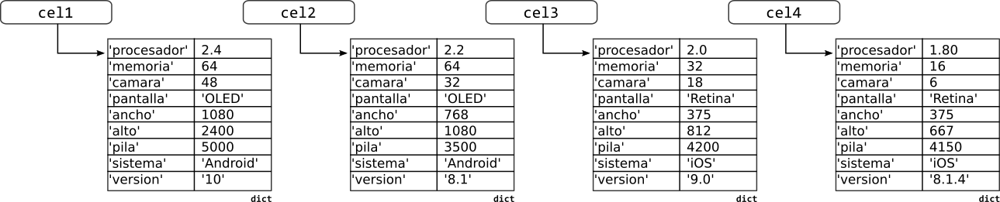
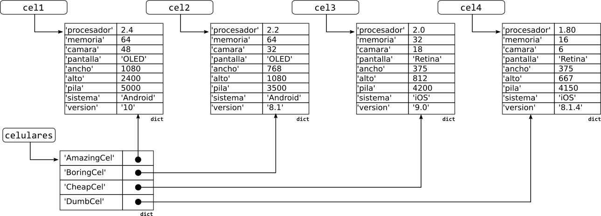

    <main class="jupyter-page">
    
<div class="jb_cell">

<div class="cell border-box-sizing text_cell rendered"><div class="inner_cell">
<div class="text_cell_render border-box-sizing rendered_html">
<table>
<thead><tr>
<th style="text-align:left">Versión borrador / preliminar</th>
</tr>
</thead>
<tbody>
<tr>
<td style="text-align:left">Este documento es una versión preliminar para uso interno. Si encuentra algún problema o error, o si tiene algún comentario por favor repórtelo a los autores</td>
<td></td>
</tr>
</tbody>
</table>
<h1 id="Diccionarios">Diccionarios<a class="anchor-link" href="#Diccionarios"> </a></h1><blockquote><p>El objetivo de esta sección es introducir el concepto de diccionario, que en Python se implementa con el tipo de dato <code>dict</code>, y mostrar cómo puede ser de utilidad para construir programas mucho más complejos.</p>
</blockquote>
<p>En las secciones anteriores hemos trabajado exclusivamente con los tipos de datos básicos de Python (<code>int</code>, <code>bool</code>, <code>str</code>, <code>float</code>). Aunque estos tipos son suficientes para muchas cosas, tienen también un problema grave: si los problemas son medianamente complejos se necesitan muchas variables y parámetros. Esto nos obliga a tener mucho cuidado para no olvidar ni confundir variables. También hace necesario ser creativo y organizado con los nombres que utilicemos.</p>
<p>Por ejemplo, si quisiéramos hacer una función que compare tres celulares con base en la velocidad del procesador, la cantidad de memoria, la calidad de la cámara, la tecnología de la pantalla, el tamaño de la pantalla, la capacidad de la pila, el sistema operativo y su versión, necesitaríamos 27 parámetros!<sup class="footnote-ref" id="fnref-pantalla"><a href="#fn-pantalla">1</a></sup> Además de que sería <em>incómodo</em> declarar e implementar esta función, también sería incómodo<sup class="footnote-ref" id="fnref-incomodo"><a href="#fn-incomodo">2</a></sup> invocarla: sería muy fácil olvidar un parámetro y más aún intercambiar el orden de dos parámetros, llevando a erorres difíciles de diagnosticar.</p>
<p>En esta sección vamos a introducir un nuevo concepto que nos permitirá simplificar un poco el problema anterior: en lugar de requerir 27 parámetros usaremos sólo 3. Este concepto, que en Python se llama <strong>diccionario</strong> y que en otros lenguajes se conoce como <strong>mapa</strong>, es parte básica del lenguaje y, como no requiere de librerías adicionales, se usa de manera extremadamente frecuente.</p>
<h2 id="El-concepto-de-diccionario">El concepto de diccionario<a class="anchor-link" href="#El-concepto-de-diccionario"> </a></h2><p>Un <strong>diccionario</strong> es una <strong>estructura de datos</strong> que contiene muchos <strong>valores</strong>, identificados cada uno con una <strong>llave</strong> que es única.</p>
<p>El término <strong>estructura de datos</strong> hace referencia a una forma de organizar datos para poder almacenarlos, modificarlos y consultarlos. Técnicamente, las variables que hemos venido utilizando son estructuras de datos pero, como sólo tienen un valor, raramente se les aplica el término a estas.</p>
<p>Un diccionario es entonces una estructura de datos (una forma de organizar datos), donde a cada valor que queramos almacenar se le asigna una llave (una llave es también un valor, pero además es único dentro del diccionario). Un buen ejemplo de esto es el diccionario de un lenguaje como el Español: a cada palabra (una llave) le corresponde una definición (un valor). Otro ejemplo es una red social como Twitter: a cada nombre de usuario (una llave) le corresponde un usuario (un valor) con toda su información.</p>
<p>Hay básicamente dos usos que nosotros le damos a un diccionario en la vida diaria. El primero es para buscar la definición de una palabra: si nosotros conocemos la palabra (la llave), podemos obtener la definición asociada a esta (el valor). El segundo uso de un diccionario es descubrir si una palabra existe o no: si no encontramos una palabra entre las llaves del diccionario, significa que la palabra no existe y que no tiene una definición. Note que un diccionario está construido pensando en que el criterio de búsqueda es la palabra y no la definición. Sería muy extraño que alguien intentara buscar la palabra en Español que corresponde a la definición <em>"Clase o condición a la cual está sujeta la vida de cada uno"</em>.</p>
<p>En las siguientes secciones mostraremos cómo usar este concepto en Python y mostraremos también cómo podemos construir y modificar nuestros propios diccionarios.</p>
<h2 id="El-tipo-dict-en-Python">El tipo <code>dict</code> en Python<a class="anchor-link" href="#El-tipo-dict-en-Python"> </a></h2><p>En Python los diccionarios son un elemento básico del lenguaje que, así como las cadenas, está perfectamente integrado dentro de la sintaxis del lenguaje. Para crear un diccionario basta con indicar que se quiere crear un diccionario (usando los caracteres <code>{}</code>) y separar las parejas <code>llave:valor</code> usando comas. Tomemos como ejemplo el siguiente fragmento, en el cual se han incluido cambios de línea para facilitar la lectura:</p>
<div class="highlight"><pre><span></span><span class="n">palabras</span> <span class="o">=</span> <span class="p">{</span> <span class="s1">&#39;imagen&#39;</span> <span class="p">:</span> <span class="s1">&#39;Figura, representación, semejanza y apariencia de algo&#39;</span><span class="p">,</span>
             <span class="s1">&#39;figura&#39;</span> <span class="p">:</span> <span class="s1">&#39;Forma exterior de alguien o de algo&#39;</span><span class="p">,</span> 
             <span class="s1">&#39;baraja&#39;</span> <span class="p">:</span> <span class="s1">&#39;Conjunto completo de cartas empleado para juegos de azar&#39;</span><span class="p">,</span>
             <span class="s1">&#39;posibilidad&#39;</span> <span class="p">:</span> <span class="s1">&#39;Aptitud, potencia u ocasión para ser o existir algo&#39;</span> <span class="p">}</span>
</pre></div>
<p></p>
<p>Este fragmento crea una nueva variable con el nombre <code>palabras</code>. A diferencia de variables más sencillas que sólo tienen un valor, esta nueva variable es un diccionario y contiene 4 parejas llave-valor. También habríamos podido crear un diccionario vacío con la expresión <code>palabras = {}</code>. Observe lo que pasa si aplicamos las funciones <code>type()</code> y <code>len()</code> a nuestra nueva variable:</p>

<pre><code>&gt;&gt;&gt; type(palabras)
&lt;class 'dict'&gt;
&gt;&gt;&gt; len(palabras)
4</code></pre>
<p>Con <code>type()</code>, vemos que Python utiliza el término <code>dict</code> para referirse al tipo de datos de los diccionarios. Con <code>len()</code>, vemos que Python cuenta la cantidad de parejas que hay en el diccionario.</p>
<p>Veamos ahora cómo hacemos para consultar el contenido del diccionario:</p>
<div class="highlight"><pre><span></span><span class="o">&gt;&gt;&gt;</span> <span class="n">definicion_imagen</span> <span class="o">=</span> <span class="n">palabras</span><span class="p">[</span><span class="s1">&#39;imagen&#39;</span><span class="p">]</span>
<span class="o">&gt;&gt;&gt;</span> <span class="k">print</span><span class="p">(</span><span class="n">definicion_imagen</span><span class="p">)</span>
<span class="n">Figura</span><span class="p">,</span> <span class="n">representación</span><span class="p">,</span> <span class="n">semejanza</span> <span class="n">y</span> <span class="n">apariencia</span> <span class="n">de</span> <span class="n">algo</span>
</pre></div>
<p>En este fragmento estamos consultando el valor asociado a la cadena <code>'imagen'</code> dentro del diccionario <code>palabras</code>. Para esto usamos el nombre de la variable seguido del nombre de la llave entre paréntesis cuadrados. Note que el nombre de la llave tiene que ser idéntico al que usamos cuando creamos el diccionario. No funcionaría si usáramos <code>'Imagen'</code> o <code>'IMAGEN'</code>). Si intentamos extraer un valor usando una llave que no existe, el resultado es un error:</p>
<div class="highlight"><pre><span></span><span class="o">&gt;&gt;&gt;</span> <span class="n">definicion</span> <span class="o">=</span> <span class="n">palabras</span><span class="p">[</span><span class="s1">&#39;IMAGEN&#39;</span><span class="p">]</span>
<span class="n">Traceback</span> <span class="p">(</span><span class="n">most</span> <span class="n">recent</span> <span class="n">call</span> <span class="n">last</span><span class="p">):</span>
  <span class="n">File</span> <span class="s2">&quot;&lt;stdin&gt;&quot;</span><span class="p">,</span> <span class="n">line</span> <span class="mi">1</span><span class="p">,</span> <span class="ow">in</span> <span class="o">&lt;</span><span class="n">module</span><span class="o">&gt;</span>
<span class="ne">KeyError</span><span class="p">:</span> <span class="s1">&#39;IMAGEN&#39;</span>
</pre></div>
<p>Para evitar este problema es posible utilizar el operador <code>in</code> que permite consultar si una llave hace parte de un diccionario o no.</p>
<div class="highlight"><pre><span></span><span class="n">llave</span> <span class="o">=</span> <span class="s1">&#39;IMAGEN&#39;</span>
<span class="c1"># Preguntar si la llave está en el diccionario antes de consultar</span>
<span class="k">if</span> <span class="n">llave</span> <span class="ow">in</span> <span class="n">palabras</span><span class="p">:</span>
  <span class="n">definicion</span> <span class="o">=</span> <span class="n">palabras</span><span class="p">[</span><span class="n">llave</span><span class="p">]</span>
<span class="k">else</span><span class="p">:</span>
  <span class="n">definicion</span> <span class="o">=</span> <span class="s2">&quot;La palabra &#39;&quot;</span> <span class="o">+</span> <span class="n">llave</span> <span class="o">+</span> <span class="s2">&quot;&#39; no se encuentra en el diccionario&quot;</span>
</pre></div>
<p>A diferencia del ejemplo pasado, en este no se va a producir un error porque sólo consultamos el valor de la llave si estamos seguros de que se encuentra dentro del diccionario.</p>
<h3 id="Nombres-y-valores-de-variables-vs.-nombres-de-llave">Nombres y valores de variables vs. nombres de llave<a class="anchor-link" href="#Nombres-y-valores-de-variables-vs.-nombres-de-llave"> </a></h3><p>En la sección mostramos el uso básico de los diccionarios y la forma en la que se extrae un valor. En esta sección vamos a explorar uno de los errores más comunes que ocurren al utilizar diccionarios: confundir el nombre de una variable, con el valor de una variable y con el nombre de una llave.</p>
<p>En primer lugar, estudie con atención el siguiente fragmento de código y escriba los valores que debería imprimir. Si se produce algún error en alguna parte, explíquelo.</p>
<div class="highlight"><pre><span></span><span class="n">diccionario</span> <span class="o">=</span> <span class="p">{</span><span class="s2">&quot;llave&quot;</span><span class="p">:</span><span class="s2">&quot;valor&quot;</span><span class="p">,</span> <span class="s2">&quot;palabra&quot;</span><span class="p">:</span><span class="s2">&quot;definición&quot;</span><span class="p">}</span>
<span class="n">llave</span> <span class="o">=</span> <span class="s2">&quot;llave&quot;</span>
<span class="k">print</span><span class="p">(</span><span class="mi">1</span><span class="p">,</span> <span class="n">diccionario</span><span class="p">[</span><span class="s2">&quot;llave&quot;</span><span class="p">])</span>
<span class="k">print</span><span class="p">(</span><span class="mi">2</span><span class="p">,</span> <span class="n">diccionario</span><span class="p">[</span><span class="n">llave</span><span class="p">])</span>
<span class="n">llave</span> <span class="o">=</span> <span class="s2">&quot;palabra&quot;</span>
<span class="k">print</span><span class="p">(</span><span class="mi">3</span><span class="p">,</span> <span class="n">diccionario</span><span class="p">[</span><span class="n">llave</span><span class="p">])</span>
<span class="k">print</span><span class="p">(</span><span class="mi">4</span><span class="p">,</span> <span class="n">diccionario</span><span class="p">[</span><span class="s2">&quot;palabra&quot;</span><span class="p">])</span>
<span class="k">print</span><span class="p">(</span><span class="mi">5</span><span class="p">,</span> <span class="n">diccionario</span><span class="p">[</span><span class="n">palabra</span><span class="p">])</span>
</pre></div>
<p>Gráficamente, el diccionario que se construye con el código anterior se ve como en la siguiente figura.</p>
<p></p>
<p>A continuación explicamos qué imprime cada llamado a la función <code>print</code> pero lo invitamos a intentar resolverlo usted antes de mirar la solución.</p>
<h4 id="1.-diccionario[&quot;llave&quot;]">1. diccionario["llave"]<a class="anchor-link" href="#1.-diccionario[&quot;llave&quot;]"> </a></h4><p>En el primer caso, se imprime en la consola lo siguiente: <code>1 valor</code>.</p>
<p>Esto no debería ser una sorpresa porque se está utilizando explícitamente el nombre de la llave que está almacenada en el diccionario.</p>
<h4 id="2.-diccionario[llave]">2. diccionario[llave]<a class="anchor-link" href="#2.-diccionario[llave]"> </a></h4><p>En el segundo caso, se imprime en la consola lo siguiente: <code>2 valor</code>.</p>
<p>En este caso, se está usando la variable <code>llave</code> para indicar cuál es la llave que nos interesa en el diccionario. El punto importante acá es que <strong>no nos interesa el nombre de la variable</strong>. Lo que es importante es el valor que tiene la variable. En este caso, el valor de la variable es la cadena <code>'llave'</code> y por eso el valor que se imprime es la cadena <code>'valor'</code>.</p>
<h4 id="3.-diccionario[llave]-(segunda-parte)">3. diccionario[llave] (segunda parte)<a class="anchor-link" href="#3.-diccionario[llave]-(segunda-parte)"> </a></h4><p>En el tercer caso, se imprime en la consola lo siguiente: <code>3 definición</code>.</p>
<p>Este caso refuerza lo que dijimos en el punto anterior: aunque la variable se llama <code>llave</code>,  el nombre no es importante sino el valor almacenado en ella. En este caso, la variable almacena la cadena <code>'palabra'</code>, así que lo que sacamos del diccionario es el valor asociado a la llave <code>'palabra'</code>.</p>
<h4 id="4.-diccionario[&quot;palabra&quot;]">4. diccionario["palabra"]<a class="anchor-link" href="#4.-diccionario[&quot;palabra&quot;]"> </a></h4><p>En el cuarto caso, se imprime en la consola lo siguiente: <code>4 definición</code>.</p>
<p>Esta es la versión equivalente del primer caso: usamos una cadena que es idéntica a una cadena que se encuentra dentro del diccionario.</p>
<h4 id="5.-diccionario[palabra]">5. diccionario[palabra]<a class="anchor-link" href="#5.-diccionario[palabra]"> </a></h4><p>En el quinto caso, no se imprime nada en la consola porque se produce un error.</p>
<p>Fíjese que hasta el momento no hemos definido ninguna variable con el nombre <code>palabra</code>, así que cuando se intenta consultar el valor de esta variable, se produce un error.</p>
<h3 id="Tipos-de-llaves-y-valores">Tipos de llaves y valores<a class="anchor-link" href="#Tipos-de-llaves-y-valores"> </a></h3><p>En Python, las llaves y valores en un diccionario pueden ser prácticamente de cualquier tipo. Podemos tener diccionarios cuyas llaves y valores son cadenas, como en el caso de nuestro ejemplo de las palabras en Español. Podemos tener también diccionarios cuyas llaves son cadenas y sus valores son números, como en el caso de las notas que obtuvieron los estudiantes de algún curso (los nombres son las llaves y las notas son los valores). Aunque es menos usual, las llaves de un diccionario también pueden ser números, como en el caso de un diccionario que represente un edificio (las llaves son los números de los apartamentos y los valores son los nombres de quienes viven en esos apartamentos). Finalmente, los tipos de los valores pueden combinarse: más adelante exploraremos ejemplos donde las llaves son cadenas y los valores son de varios tipos diferentes.</p>
<p><strong>¡Cuidado!</strong> 
Aunque no está prohibido en el lenguaje, es recomendable evitar tener llaves de diferentes tipos en el mismo diccionario (algunas numéricas, otras cadenas, otras booleanas, etc.).</p>
<h2 id="El-m&#233;todo-get">El m&#233;todo get<a class="anchor-link" href="#El-m&#233;todo-get"> </a></h2><p>Como ya vimos, cuando se intenta consultar un diccionario usando una llave que no existe se produce un error. Una forma de evitar esto es consultar primero si la llave existe usando el operador <code>in</code>. Otra alternativa, muy usada porque reduce el tamaño del código, es usar el <em>método</em><sup class="footnote-ref" id="fnref-metodos"><a href="#fn-metodos">3</a></sup> <code>get</code>. Este método, que se aplica sobre un diccionario, recibe como parámetros una llave y el valor que se debería retornar si la llave no existe en el diccionario.</p>
<div class="highlight"><pre><span></span><span class="n">llave</span> <span class="o">=</span> <span class="s1">&#39;IMAGEN&#39;</span>
<span class="n">definicion</span> <span class="o">=</span> <span class="n">palabras</span><span class="o">.</span><span class="n">get</span><span class="p">(</span><span class="n">llave</span><span class="p">,</span> <span class="s2">&quot;La palabra &#39;&quot;</span> <span class="o">+</span> <span class="n">llave</span> <span class="o">+</span> <span class="s2">&quot;&#39; no se encuentra en el diccionario&quot;</span><span class="p">)</span>
</pre></div>
<p>El fragmento anterior es equivalente al que usamos en la sección pasada: si la palabra existe en el diccionario, en la variable <code>definicion</code> queda el valor contenido en el diccionario; de lo contrario, en la variable <code>definicion</code> queda un mensaje anunciando que la palabra no existía.</p>
<h3 id="El-valor-None">El valor None<a class="anchor-link" href="#El-valor-None"> </a></h3><p>El valor <code>None</code>, que se puede traducir como <code>ninguno</code>, es un valor que se usa en Python para denotar la "ausencia de un valor". El tipo de <code>None</code> es <code>NoneType</code> y es ese nombre el que se menciona cuando se hace una operación con este valor:</p>
<div class="highlight"><pre><span></span><span class="o">&gt;&gt;&gt;</span> <span class="bp">None</span> <span class="o">+</span> <span class="mi">1</span>
<span class="n">Traceback</span> <span class="p">(</span><span class="n">most</span> <span class="n">recent</span> <span class="n">call</span> <span class="n">last</span><span class="p">):</span>
  <span class="n">File</span> <span class="s2">&quot;&lt;console&gt;&quot;</span><span class="p">,</span> <span class="n">line</span> <span class="mi">1</span><span class="p">,</span> <span class="ow">in</span> <span class="o">&lt;</span><span class="n">module</span><span class="o">&gt;</span>
<span class="ne">TypeError</span><span class="p">:</span> <span class="n">unsupported</span> <span class="n">operand</span> <span class="nb">type</span><span class="p">(</span><span class="n">s</span><span class="p">)</span> <span class="k">for</span> <span class="o">+</span><span class="p">:</span> <span class="s1">&#39;NoneType&#39;</span> <span class="ow">and</span> <span class="s1">&#39;int&#39;</span>
</pre></div>
<p>Nosotros ya hemos utilizado <code>None</code> para describir el tipo de retorno de una función que no se espera que retorne nada. Ahora vamos a utilizar <code>None</code> como un valor y no como un tipo. Este valor es de mucha utilidad cuando el resultado de una operación puede no existir. Considere por ejemplo el caso de las soluciones reales de una ecuación cuadrática: la ecuación puede tener dos soluciones diferentes, dos soluciones iguales, o ninguna solución <sup class="footnote-ref" id="fnref-tuple"><a href="#fn-tuple">4</a></sup>. Lo normal sería que, en este último caso, se usara <code>None</code> como valor para las soluciones.</p>
<div class="highlight"><pre><span></span><span class="kn">import</span> <span class="nn">math</span>
<span class="k">def</span> <span class="nf">solucionar_cuadratica</span><span class="p">(</span><span class="n">a</span><span class="p">:</span> <span class="nb">int</span><span class="p">,</span> <span class="n">b</span><span class="p">:</span> <span class="nb">int</span><span class="p">,</span> <span class="n">c</span><span class="p">:</span><span class="nb">int</span><span class="p">)</span> <span class="o">-&gt;</span> <span class="nb">tuple</span><span class="p">:</span>
    <span class="sd">&quot;&quot;&quot; Encuentra las soluciones reales de una ecuación cuadrática de la forma</span>
<span class="sd">        y = ax^2 + bx + c</span>
<span class="sd">    Parámetros:</span>
<span class="sd">      a (int): El coeficiente del término de orden 2</span>
<span class="sd">      b (int): El coeficiente del término de orden 1</span>
<span class="sd">      c (int): El coeficiente del término de orden 0</span>
<span class="sd">    Retorna:</span>
<span class="sd">      (tuple): Una tupla con las soluciones reales de la ecuación.</span>
<span class="sd">               Retorna None si la ecuación no tiene solución real.</span>
<span class="sd">    &quot;&quot;&quot;</span>
    <span class="n">soluciones</span> <span class="o">=</span> <span class="bp">None</span>
    <span class="n">determinante</span> <span class="o">=</span> <span class="p">(</span><span class="n">b</span><span class="o">**</span><span class="mi">2</span><span class="p">)</span> <span class="o">-</span> <span class="p">(</span><span class="mi">4</span><span class="o">*</span><span class="n">a</span><span class="o">*</span><span class="n">c</span><span class="p">)</span>
    <span class="k">if</span> <span class="n">determinante</span> <span class="o">&gt;=</span> <span class="mi">0</span><span class="p">:</span>
        <span class="n">sol1</span> <span class="o">=</span> <span class="o">-</span><span class="n">b</span> <span class="o">+</span> <span class="p">(</span><span class="n">math</span><span class="o">.</span><span class="n">sqrt</span><span class="p">(</span><span class="n">determinante</span><span class="p">))</span>
        <span class="n">sol2</span> <span class="o">=</span> <span class="o">-</span><span class="n">b</span> <span class="o">-</span> <span class="p">(</span><span class="n">math</span><span class="o">.</span><span class="n">sqrt</span><span class="p">(</span><span class="n">determinante</span><span class="p">))</span>
        <span class="n">soluciones</span> <span class="o">=</span> <span class="p">(</span><span class="n">sol1</span><span class="p">,</span> <span class="n">sol2</span><span class="p">)</span>
    <span class="k">return</span> <span class="n">soluciones</span>

<span class="k">def</span> <span class="nf">imprimir_soluciones</span><span class="p">(</span><span class="n">soluciones</span><span class="p">:</span> <span class="nb">tuple</span><span class="p">)</span> <span class="o">-&gt;</span> <span class="bp">None</span><span class="p">:</span>
    <span class="sd">&quot;&quot;&quot; Imprime las soluciones de una ecuación cuadrática o imprime</span>
<span class="sd">        un mensaje indicando que no había soluciones.</span>
<span class="sd">    Parámetros:</span>
<span class="sd">      soluciones (tuple): Una tupla con dos elementos que son las soluciones de la ecuación.</span>
<span class="sd">                          Si no hay soluciones reales, &#39;soluciones&#39; debe tener el valor None.</span>
<span class="sd">    &quot;&quot;&quot;</span>
    <span class="k">if</span> <span class="n">soluciones</span> <span class="ow">is</span> <span class="bp">None</span><span class="p">:</span>
        <span class="k">print</span><span class="p">(</span><span class="s2">&quot;La ecuación no tenía soluciones reales&quot;</span><span class="p">)</span>
    <span class="k">else</span><span class="p">:</span>
        <span class="k">print</span><span class="p">(</span><span class="s2">&quot;Las soluciones son&quot;</span><span class="p">,</span> <span class="n">soluciones</span><span class="p">[</span><span class="mi">0</span><span class="p">],</span> <span class="s2">&quot;y&quot;</span><span class="p">,</span> <span class="n">soluciones</span><span class="p">[</span><span class="mi">1</span><span class="p">])</span>

<span class="c1"># Calcular e imprimir las soluciones de una ecuación sin soluciones reales</span>
<span class="n">soluciones</span> <span class="o">=</span> <span class="n">solucionar_cuadratica</span><span class="p">(</span><span class="mi">1</span><span class="p">,</span><span class="mi">1</span><span class="p">,</span><span class="mi">1</span><span class="p">)</span>
<span class="n">imprimir_soluciones</span><span class="p">(</span><span class="n">soluciones</span><span class="p">)</span>

<span class="c1"># Calcular e imprimir las soluciones de una ecuación con dos soluciones reales diferentes</span>
<span class="n">soluciones</span> <span class="o">=</span> <span class="n">solucionar_cuadratica</span><span class="p">(</span><span class="mi">1</span><span class="p">,</span><span class="mi">0</span><span class="p">,</span><span class="o">-</span><span class="mi">1</span><span class="p">)</span>
<span class="n">imprimir_soluciones</span><span class="p">(</span><span class="n">soluciones</span><span class="p">)</span>
</pre></div>
<p>En este fragmento tenemos una función llamada <code>solucionar_cuadratica</code> que recibe los coeficientes de una ecuación cuadrática y calcula una <em>tupla</em> con una pareja de soluciones. Por ahora no se preocupe por la tupla sino por el hecho de que, si la ecuación no tiene soluciones, la función retorna el valor <code>None</code>.</p>
<p>La segunda función, <code>imprimir_soluciones</code> espera una tupla con dos soluciones en una tupla o el valor <code>None</code>. Para saber qué mensaje imprimir, la función usa la condición <code>soluciones is None</code>. En general <code>x is None</code> es la expresión preferida en Python para saber si alguna variable tiene el valor <code>None</code>.</p>
<p>Veamos ahora el resultado de correr el programa anterior:</p>

<pre><code>La ecuación no tenía soluciones reales
Las soluciones son 2.0 y -2.0</code></pre>
<h3 id="El-m&#233;todo-get-y-el-valor-None">El m&#233;todo get y el valor None<a class="anchor-link" href="#El-m&#233;todo-get-y-el-valor-None"> </a></h3><p>La explicación anterior sobre el valor <code>None</code> es relevante porque se usa muy frecuentemente con el método <code>get</code>: si una llave no se encuentra en un diccionario, usar <code>None</code> como valor por defecto es lo más natural en muchos casos y es mucho mejor que usar cosas como cadenas vacías o sólo con espacios. Observemos el uso de <code>get</code> y <code>None</code> en un ejemplo:</p>
<div class="highlight"><pre><span></span><span class="k">def</span> <span class="nf">imprimir_definicion</span><span class="p">(</span><span class="n">diccionario</span><span class="p">:</span> <span class="nb">dict</span><span class="p">,</span> <span class="n">palabra</span><span class="p">:</span> <span class="nb">str</span><span class="p">)</span> <span class="o">-&gt;</span> <span class="bp">None</span><span class="p">:</span>
    <span class="sd">&quot;&quot;&quot; Imprime la definición de una palabra o, si la palabra no existe,</span>
<span class="sd">        un mensaje indicando el problema.</span>
<span class="sd">    Parámetros:</span>
<span class="sd">      diccionario (dict): Un diccionario con las palabras y sus definiciones</span>
<span class="sd">      palabra (str): La palabra para la que se quiere la definición</span>
<span class="sd">    &quot;&quot;&quot;</span>
    <span class="n">definicion</span> <span class="o">=</span> <span class="n">palabras</span><span class="o">.</span><span class="n">get</span><span class="p">(</span><span class="n">palabra</span><span class="p">,</span> <span class="bp">None</span><span class="p">)</span>
    <span class="k">if</span> <span class="n">definicion</span> <span class="ow">is</span> <span class="ow">not</span> <span class="bp">None</span><span class="p">:</span>
         <span class="k">print</span><span class="p">(</span><span class="s2">&quot;La definición de&quot;</span><span class="p">,</span> <span class="n">palabra</span><span class="p">,</span> <span class="s2">&quot;es:&quot;</span><span class="p">,</span> <span class="n">definicion</span><span class="p">)</span>
    <span class="k">else</span><span class="p">:</span>
         <span class="k">print</span><span class="p">(</span><span class="s2">&quot;La palabra &#39;&quot;</span> <span class="o">+</span> <span class="n">llave</span> <span class="o">+</span> <span class="s2">&quot;&#39; no se encuentra en el diccionario&quot;</span><span class="p">)</span>
</pre></div>
<h2 id="Modificaci&#243;n-de-diccionarios">Modificaci&#243;n de diccionarios<a class="anchor-link" href="#Modificaci&#243;n-de-diccionarios"> </a></h2><p>Ya vimos cómo implementar en Python los dos usos que usualmente le damos al diccionario de un idioma como el Español. Veamos ahora cómo harían los miembros de la RAE para modificar el diccionario agregando nuevos términos y definiciones y eliminando términos en desuso.</p>
<p>Para explicar cómo se modifica un diccionario, y mostrar de paso que un diccionario se utiliza igual que cualquier otra variable, vamos a crear una nueva función que agrega definiciones al diccionario. Empezaremos con una versión sencilla y la iremos volviendo progresivamente más compleja.</p>
<h3 id="Agregar-una-definici&#243;n:-primera-versi&#243;n">Agregar una definici&#243;n: primera versi&#243;n<a class="anchor-link" href="#Agregar-una-definici&#243;n:-primera-versi&#243;n"> </a></h3><div class="highlight"><pre><span></span><span class="k">def</span> <span class="nf">agregar_definicion</span><span class="p">(</span><span class="n">diccionario</span><span class="p">:</span> <span class="nb">dict</span><span class="p">,</span> <span class="n">palabra</span><span class="p">:</span> <span class="nb">str</span><span class="p">,</span> <span class="n">definicion</span><span class="p">:</span> <span class="nb">str</span><span class="p">)</span><span class="o">-&gt;</span> <span class="bp">None</span><span class="p">:</span>
  <span class="n">diccionario</span><span class="p">[</span><span class="n">palabra</span><span class="p">]</span> <span class="o">=</span> <span class="n">definicion</span>
</pre></div>
<p>Esta primera versión de la función muestra cómo se modifica un diccionario: usando la misma convención que para consultar (paréntesis cuadrados alrededor del nombre de la llave), le <em>asignamos</em> una definición a la palabra. Veamos ahora cómo invocar la nueva función:</p>
<div class="highlight"><pre><span></span><span class="n">palabras</span> <span class="o">=</span> <span class="p">{}</span>
<span class="n">agregar_definicion</span><span class="p">(</span><span class="n">palabras</span><span class="p">,</span> <span class="s1">&#39;imagen&#39;</span><span class="p">,</span> <span class="s1">&#39;Figura, representación, semejanza y apariencia de algo&#39;</span><span class="p">)</span>
<span class="n">agregar_definicion</span><span class="p">(</span><span class="n">palabras</span><span class="p">,</span> <span class="s1">&#39;figura&#39;</span><span class="p">,</span> <span class="s1">&#39;Forma exterior de alguien o de algo&#39;</span><span class="p">)</span>
</pre></div>
<p>Después de ejecutar estas 3 instrucciones, vamos a tener un nuevo diccionario llamado <code>palabras</code> que va a tener las definiciones de <code>imagen</code> y <code>figura</code>.</p>
<p></p>
<p>La pregunta que debería surgir en este punto es: ¿Por qué se modifica el diccionario palabras si la función no retorna nada? La respuesta a esta pregunta la revisaremos en una sección posterior en la que entraremos en detalle sobre la <strong>mutabilidad</strong> de los diccionarios.</p>
<h3 id="Agregar-una-definici&#243;n:-segunda-versi&#243;n">Agregar una definici&#243;n: segunda versi&#243;n<a class="anchor-link" href="#Agregar-una-definici&#243;n:-segunda-versi&#243;n"> </a></h3><p>Para la segunda versión de la función, vamos a cambiar la signatura para que nuestra función retorne un valor de verdad indicando si se pudo agregar la definición o no. Si la palabra ya existía en el diccionario, no debería agregarse y la función debería retornar el valor <code>False</code>. De lo contrario, debería agregarse y el resultado debería ser <code>True</code>.</p>
<div class="highlight"><pre><span></span><span class="k">def</span> <span class="nf">agregar_definicion</span><span class="p">(</span><span class="n">diccionario</span><span class="p">:</span> <span class="nb">dict</span><span class="p">,</span> <span class="n">palabra</span><span class="p">:</span> <span class="nb">str</span><span class="p">,</span> <span class="n">definicion</span><span class="p">:</span> <span class="nb">str</span><span class="p">)</span><span class="o">-&gt;</span> <span class="nb">bool</span><span class="p">:</span>
  <span class="n">definicion_agregada</span> <span class="o">=</span> <span class="bp">False</span>
  <span class="k">if</span> <span class="n">palabra</span> <span class="ow">not</span> <span class="ow">in</span> <span class="n">diccionario</span><span class="p">:</span>
      <span class="n">diccionario</span><span class="p">[</span><span class="n">palabra</span><span class="p">]</span> <span class="o">=</span> <span class="n">definicion</span>
      <span class="n">definicion_agregada</span> <span class="o">=</span> <span class="bp">True</span>
  <span class="k">return</span> <span class="n">definicion_agregada</span>
</pre></div>
<p>Observe 3 cosas interesantes en esta función:</p>
<ol>
<li>La variable <code>definicion_agregada</code> se inicializa en <code>False</code>.</li>
<li>El valor de la variable <code>definicion_agregada</code> sólo se cambia por <code>True</code> si la palabra se pudo agregar.</li>
<li>Usamos el operador <code>not in</code> para consultar si la llave <strong>no estaba</strong> en el diccionario.</li>
</ol>
<div class="highlight"><pre><span></span><span class="n">palabras</span> <span class="o">=</span> <span class="p">{}</span>
<span class="n">res1</span> <span class="o">=</span> <span class="n">agregar_definicion</span><span class="p">(</span><span class="n">palabras</span><span class="p">,</span> <span class="s1">&#39;imagen&#39;</span><span class="p">,</span> <span class="s1">&#39;Figura, representación, semejanza y apariencia de algo&#39;</span><span class="p">)</span>
<span class="n">res2</span> <span class="o">=</span> <span class="n">agregar_definicion</span><span class="p">(</span><span class="n">palabras</span><span class="p">,</span> <span class="s1">&#39;figura&#39;</span><span class="p">,</span> <span class="s1">&#39;Forma exterior de alguien o de algo&#39;</span><span class="p">)</span>
<span class="n">res3</span> <span class="o">=</span> <span class="n">agregar_definicion</span><span class="p">(</span><span class="n">palabras</span><span class="p">,</span> <span class="s1">&#39;imagen&#39;</span><span class="p">,</span> <span class="s1">&#39;Figura, representación, semejanza y apariencia de algo&#39;</span><span class="p">)</span>
<span class="k">print</span><span class="p">(</span><span class="n">res1</span><span class="p">,</span> <span class="n">res2</span><span class="p">,</span> <span class="n">res3</span><span class="p">)</span>
</pre></div>
<p>En este fragmento usamos la nueva función y guardamos el resultado de cada invocación en una variable. Cuando imprimimos las tres variables el resultado que vemos en la consola es <code>True True False</code>. Esto nos indica que las dos primeras invocaciones fueron exitosas y que la tercera falló.</p>
<h3 id="Agregar-una-definici&#243;n:-tercera-versi&#243;n">Agregar una definici&#243;n: tercera versi&#243;n<a class="anchor-link" href="#Agregar-una-definici&#243;n:-tercera-versi&#243;n"> </a></h3><p>En la tercera y última versión vamos a ofrecer la posibilidad de tener varias definiciones para una palabra. Para lograr esto vamos a concatenar las definiciones a medida que las vayamos agregando, pero sólo si no habíamos almacenado antes esa misma definición. Para verificar este último punto usaremos la operación <code>not in</code> aplicada sobre un <code>str</code> (la definición que ya teníamos almacenada).</p>
<div class="highlight"><pre><span></span><span class="k">def</span> <span class="nf">agregar_definicion</span><span class="p">(</span><span class="n">diccionario</span><span class="p">:</span> <span class="nb">dict</span><span class="p">,</span> <span class="n">palabra</span><span class="p">:</span> <span class="nb">str</span><span class="p">,</span> <span class="n">definicion</span><span class="p">:</span> <span class="nb">str</span><span class="p">)</span><span class="o">-&gt;</span> <span class="nb">bool</span><span class="p">:</span>
  <span class="n">definicion_agregada</span> <span class="o">=</span> <span class="bp">False</span>
  <span class="c1"># La palabra es nueva en el diccionario</span>
  <span class="k">if</span> <span class="n">palabra</span> <span class="ow">not</span> <span class="ow">in</span> <span class="n">diccionario</span><span class="p">:</span>
      <span class="n">diccionario</span><span class="p">[</span><span class="n">palabra</span><span class="p">]</span> <span class="o">=</span> <span class="n">definicion</span>
      <span class="n">definicion_agregada</span> <span class="o">=</span> <span class="bp">True</span>
  <span class="c1"># La palabra no es nueva pero la definición sí es nueva</span>
  <span class="k">elif</span> <span class="n">definicion</span> <span class="ow">not</span> <span class="ow">in</span> <span class="n">diccionario</span><span class="p">[</span><span class="n">palabra</span><span class="p">]:</span>
      <span class="n">diccionario</span><span class="p">[</span><span class="n">palabra</span><span class="p">]</span> <span class="o">+=</span> <span class="s1">&#39;</span><span class="se">\n</span><span class="s1">&#39;</span> <span class="o">+</span> <span class="n">definicion</span>
      <span class="n">definicion_agregada</span> <span class="o">=</span> <span class="bp">True</span>
  <span class="k">return</span> <span class="n">definicion_agregada</span>
</pre></div>
<p>En esta nueva función tenemos una primera posibilidad y es que la palabra no estuviera en el diccionario. En este caso, la palabra se agrega igual que en el caso anterior.</p>
<p>La segunda posibilidad es que la palabra ya estuviera en el diccionario. En este caso, lo que hacemos es revisar si la definición que queremos agregar es parte de la definición que tenemos en el diccionario. Esto lo hacemos aplicando el operador <code>not in</code> sobre la definición que sacamos del diccionario: este operador retornará <code>True</code> sólo si la nueva definición no está contenida en la definición que estaba guardada en el diccionario. Note que:</p>
<ul>
<li>En la condición del bloque <code>elif</code> no es necesario incluir la expresión <code>palabra in diccionario</code> porque solamente vamos a evaluar el bloque cuando la condición del <code>if</code> sea falsa. </li>
<li>Como sabemos que la palabra sí está en el diccionario, podemos consultarla en la condición del <code>elif</code> sin temor a que se genere un error.</li>
</ul>
<p>Finalmente, en el cuerpo del bloque <code>elif</code> se modifica la definición almacenada en el diccionario. Fíjese que estamos usando el operador <code>+=</code> para modificar el valor del diccionario de la misma forma en que lo usaríamos para modificar el valor de una variable.</p>
<div class="highlight"><pre><span></span><span class="n">palabras</span> <span class="o">=</span> <span class="p">{}</span>
<span class="n">res1</span> <span class="o">=</span> <span class="n">agregar_definicion</span><span class="p">(</span><span class="n">palabras</span><span class="p">,</span> <span class="s1">&#39;imagen&#39;</span><span class="p">,</span> <span class="s1">&#39;Figura, representación, semejanza y apariencia de algo&#39;</span><span class="p">)</span>
<span class="n">res2</span> <span class="o">=</span> <span class="n">agregar_definicion</span><span class="p">(</span><span class="n">palabras</span><span class="p">,</span> <span class="s1">&#39;imagen&#39;</span><span class="p">,</span> <span class="s1">&#39;Estatua, efigie o pintura de una divinidad o de un personaje sagrado.&#39;</span><span class="p">)</span>
<span class="n">res3</span> <span class="o">=</span> <span class="n">agregar_definicion</span><span class="p">(</span><span class="n">palabras</span><span class="p">,</span> <span class="s1">&#39;imagen&#39;</span><span class="p">,</span> <span class="s1">&#39;Figura, representación, semejanza y apariencia de algo&#39;</span><span class="p">)</span>
<span class="k">print</span><span class="p">(</span><span class="n">res1</span><span class="p">,</span> <span class="n">res2</span><span class="p">,</span> <span class="n">res3</span><span class="p">)</span>
</pre></div>
<p>Si ejecutamos este último fragmento usando la nueva definición de la función encontraremos que el resultado que se imprime en la consola es <code>True True False</code>. Esto significa que las dos primeras definiciones se pudieron agregar, mientras que la tercera fue rechazada porque estaba repetida.</p>
<h3 id="Eliminar-una-definici&#243;n">Eliminar una definici&#243;n<a class="anchor-link" href="#Eliminar-una-definici&#243;n"> </a></h3><p>La última operación para estudiar es la que nos permite eliminar definiciones de un diccionario. Esto se puede lograr de dos formas: con el operador <code>del</code> o con el método <code>pop</code>. Tenga en cuenta que en ambos casos es necesario verificar que la llave exista en el diccionario antes de intentar eliminarla. De lo contrario se producirá un error.</p>
<h4 id="Uso-del-operador-del-para-eliminar-un-valor">Uso del operador <code>del</code> para eliminar un valor<a class="anchor-link" href="#Uso-del-operador-del-para-eliminar-un-valor"> </a></h4><p>En la siguiente función se usa el operador <code>del</code> para eliminar una palabra del diccionario. Tenga en cuenta que esto eliminará tanto la palabra como su definición. Para evitar que se produzca un error, el llamado a <code>del</code> ocurre dentro del cuerpo de un condicional que se asegura que la palabra sí exista en el diccionario.</p>
<div class="highlight"><pre><span></span><span class="k">def</span> <span class="nf">eliminar_palabra</span><span class="p">(</span><span class="n">diccionario</span><span class="p">:</span> <span class="nb">dict</span><span class="p">,</span> <span class="n">palabra</span><span class="p">:</span> <span class="nb">str</span><span class="p">)</span><span class="o">-&gt;</span> <span class="nb">bool</span><span class="p">:</span>
    <span class="n">palabra_eliminada</span> <span class="o">=</span> <span class="bp">False</span>
    <span class="k">if</span> <span class="n">palabra</span> <span class="ow">in</span> <span class="n">diccionario</span><span class="p">:</span>
        <span class="k">del</span> <span class="n">diccionario</span><span class="p">[</span><span class="n">palabra</span><span class="p">]</span>
        <span class="n">palabra_eliminada</span> <span class="o">=</span> <span class="bp">True</span>
    <span class="k">return</span> <span class="n">palabra_eliminada</span>
</pre></div>
<p>En el siguiente fragmento se pone en uso la función para eliminar una palabra que no se encuentre en nuestro diccionario y una que sí lo esté <sup class="footnote-ref" id="fnref-toballa"><a href="#fn-toballa">5</a></sup>.</p>
<div class="highlight"><pre><span></span><span class="n">palabras</span> <span class="o">=</span> <span class="p">{}</span>
<span class="n">agregar_definicion</span><span class="p">(</span><span class="n">palabras</span><span class="p">,</span> <span class="s1">&#39;imagen&#39;</span><span class="p">,</span> <span class="s1">&#39;Figura, representación, semejanza y apariencia de algo&#39;</span><span class="p">)</span>
<span class="n">agregar_definicion</span><span class="p">(</span><span class="n">palabras</span><span class="p">,</span> <span class="s1">&#39;toballa&#39;</span><span class="p">,</span> <span class="s1">&#39;Toalla&#39;</span><span class="p">)</span>
<span class="n">agregar_definicion</span><span class="p">(</span><span class="n">palabras</span><span class="p">,</span> <span class="s1">&#39;toballa&#39;</span><span class="p">,</span> <span class="s1">&#39;Pieza de felpa&#39;</span><span class="p">)</span>
<span class="n">res1</span> <span class="o">=</span> <span class="n">eliminar_palabra</span><span class="p">(</span><span class="n">palabras</span><span class="p">,</span> <span class="s1">&#39;caracter&#39;</span><span class="p">)</span>
<span class="n">res2</span> <span class="o">=</span> <span class="n">eliminar_palabra</span><span class="p">(</span><span class="n">palabras</span><span class="p">,</span> <span class="s1">&#39;toballa&#39;</span><span class="p">)</span>
<span class="k">print</span><span class="p">(</span><span class="n">res1</span><span class="p">,</span> <span class="n">res2</span><span class="p">)</span>
</pre></div>
<h4 id="Uso-del-m&#233;todo-pop-para-eliminar-un-valor">Uso del m&#233;todo <code>pop</code> para eliminar un valor<a class="anchor-link" href="#Uso-del-m&#233;todo-pop-para-eliminar-un-valor"> </a></h4><p>En la segunda versión de la función se remplazó el operador <code>del</code> por un llamado al método <code>pop</code>. Al igual que antes, es necesario verificar que la llave efectivamente exista dentro del diccionario antes de hacer el llamado para que no se produzca ningún error.</p>
<div class="highlight"><pre><span></span><span class="k">def</span> <span class="nf">eliminar_palabra</span><span class="p">(</span><span class="n">diccionario</span><span class="p">:</span> <span class="nb">dict</span><span class="p">,</span> <span class="n">palabra</span><span class="p">:</span> <span class="nb">str</span><span class="p">)</span><span class="o">-&gt;</span> <span class="nb">bool</span><span class="p">:</span>
    <span class="n">palabra_eliminada</span> <span class="o">=</span> <span class="bp">False</span>
    <span class="k">if</span> <span class="n">palabra</span> <span class="ow">in</span> <span class="n">diccionario</span><span class="p">:</span>
        <span class="n">diccionario</span><span class="o">.</span><span class="n">pop</span><span class="p">(</span><span class="n">palabra</span><span class="p">)</span>
        <span class="n">palabra_eliminada</span> <span class="o">=</span> <span class="bp">True</span>
    <span class="k">return</span> <span class="n">palabra_eliminada</span>
</pre></div>
<p>El método <code>pop</code> tiene además un interesante resultado y es que retorna el valor eliminado. La siguiente sería una nueva versión de la función aprovechando esta característica.</p>
<div class="highlight"><pre><span></span><span class="k">def</span> <span class="nf">eliminar_palabra</span><span class="p">(</span><span class="n">diccionario</span><span class="p">:</span> <span class="nb">dict</span><span class="p">,</span> <span class="n">palabra</span><span class="p">:</span> <span class="nb">str</span><span class="p">)</span><span class="o">-&gt;</span> <span class="nb">bool</span><span class="p">:</span>
    <span class="n">palabra_eliminada</span> <span class="o">=</span> <span class="bp">False</span>
    <span class="k">if</span> <span class="n">palabra</span> <span class="ow">in</span> <span class="n">diccionario</span><span class="p">:</span>
        <span class="n">definicion_eliminada</span> <span class="o">=</span> <span class="n">diccionario</span><span class="o">.</span><span class="n">pop</span><span class="p">(</span><span class="n">palabra</span><span class="p">)</span>
        <span class="k">print</span><span class="p">(</span><span class="s2">&quot;Se eliminó la llave&quot;</span><span class="p">,</span> <span class="n">palabra</span><span class="p">,</span> <span class="s2">&quot;que tenía la definición&quot;</span><span class="p">,</span> <span class="n">definicion_eliminada</span><span class="p">)</span>
        <span class="n">palabra_eliminada</span> <span class="o">=</span> <span class="bp">True</span>
    <span class="k">return</span> <span class="n">palabra_eliminada</span>
</pre></div>
<p><strong>Nota</strong>: recuerde que no es recomendable mezclar las instrucciones de interacción (inputs y prints) con las instrucciones de su programa que manejan la información, hacen cálculos, etc.</p>
<h3 id="Eliminar-todas-las-definiciones">Eliminar todas las definiciones<a class="anchor-link" href="#Eliminar-todas-las-definiciones"> </a></h3><p>Finalmente, Python ofrece una manera para eliminar con facilidad todos los elementos de un diccionario: el método <code>clear</code>. Por ejemplo, si queremos eliminar todos los elementos del diccionario <code>palabras</code> sólo debemos ejecutar la siguiente instrucción:</p>
<div class="highlight"><pre><span></span><span class="n">palabras</span><span class="o">.</span><span class="n">clear</span><span class="p">()</span>
</pre></div>
<h2 id="Usos-de-los-diccionarios">Usos de los diccionarios<a class="anchor-link" href="#Usos-de-los-diccionarios"> </a></h2><p>Ya estudiamos todos los mecanismos para construir diccionarios, consultar y modificar valores, agregar nuevos valores y eliminar valores. Ahora vamos a estudiar algunos usos interesantes de los diccionarios.</p>
<h3 id="Histogramas-basados-en-diccionarios">Histogramas basados en diccionarios<a class="anchor-link" href="#Histogramas-basados-en-diccionarios"> </a></h3><p>Una problemática relativamente común es la de contar cuántas veces aparecen ciertos valores dentro de algo más grande. Por ejemplo, cuántas veces aparece cada uno de los dígitos entre 0 y 9 dentro de un número entero, cuántas veces aparece cada letra dentro de una palabra, o cuántas veces aparece cada palabra dentro de un texto. Un problema relacionado es el de contar cuántos elementos de un conjunto caen dentro de unas ciertas categorías (ej. cuántas personas de un grupo nacieron en cada uno de los meses del año, cuántos estudiantes aprobaron un curso, cuántos reprobaron, etc.).</p>
<p>Matemáticamente, un histograma le asigna un número a cada uno de los valores posibles de un grupo: el número indica cuántas veces apareció el valor que estábamos contando (dígitos, letras, palabras, meses, etc.). Gráficamente, un histograma se representa con un gráfico de barras en el cual el tamaño de cada barra es proporcional a la cantidad de veces en que apareció cada uno de los valores.</p>
<p></p>
<p>Los diccionarios se prestan perfectamente para construir histogramas: las llaves serán los valores que queremos contar y los valores del diccionario indicarán la cantidad de veces que apareció cada uno. La siguiente función ilustra esto:</p>
<div class="highlight"><pre><span></span><span class="k">def</span> <span class="nf">contar_vocales</span><span class="p">(</span><span class="n">texto</span><span class="p">:</span> <span class="nb">str</span><span class="p">)</span> <span class="o">-&gt;</span> <span class="nb">dict</span><span class="p">:</span>
    <span class="sd">&quot;&quot;&quot; Cuenta la cantidad de veces que aparece cada vocal dentro de un texto</span>
<span class="sd">    Parámetros:</span>
<span class="sd">      texto (str): El texto en el que van a contarse las vocales</span>
<span class="sd">    Retorno:</span>
<span class="sd">      (dict): Un diccionario donde las llaves son las vocales minúsculas y los valores</span>
<span class="sd">              son la cantidad de veces que aparece la vocal dentro del texto.</span>
<span class="sd">    &quot;&quot;&quot;</span>
    <span class="n">histograma</span> <span class="o">=</span> <span class="p">{}</span>
    <span class="n">histograma</span><span class="p">[</span><span class="s1">&#39;a&#39;</span><span class="p">]</span> <span class="o">=</span> <span class="n">texto</span><span class="o">.</span><span class="n">lower</span><span class="p">()</span><span class="o">.</span><span class="n">count</span><span class="p">(</span><span class="s1">&#39;a&#39;</span><span class="p">)</span>
    <span class="n">histograma</span><span class="p">[</span><span class="s1">&#39;e&#39;</span><span class="p">]</span> <span class="o">=</span> <span class="n">texto</span><span class="o">.</span><span class="n">lower</span><span class="p">()</span><span class="o">.</span><span class="n">count</span><span class="p">(</span><span class="s1">&#39;e&#39;</span><span class="p">)</span>
    <span class="n">histograma</span><span class="p">[</span><span class="s1">&#39;i&#39;</span><span class="p">]</span> <span class="o">=</span> <span class="n">texto</span><span class="o">.</span><span class="n">lower</span><span class="p">()</span><span class="o">.</span><span class="n">count</span><span class="p">(</span><span class="s1">&#39;i&#39;</span><span class="p">)</span>
    <span class="n">histograma</span><span class="p">[</span><span class="s1">&#39;o&#39;</span><span class="p">]</span> <span class="o">=</span> <span class="n">texto</span><span class="o">.</span><span class="n">lower</span><span class="p">()</span><span class="o">.</span><span class="n">count</span><span class="p">(</span><span class="s1">&#39;o&#39;</span><span class="p">)</span>
    <span class="n">histograma</span><span class="p">[</span><span class="s1">&#39;u&#39;</span><span class="p">]</span> <span class="o">=</span> <span class="n">texto</span><span class="o">.</span><span class="n">lower</span><span class="p">()</span><span class="o">.</span><span class="n">count</span><span class="p">(</span><span class="s1">&#39;u&#39;</span><span class="p">)</span>                
    <span class="k">return</span> <span class="n">histograma</span>
</pre></div>
<p>Esta función primero crea un histograma vacío y luego agrega una nueva llave para cada una de las vocales. El valor asociado a cada llave es el resultado de llamar al método <code>count()</code> de <code>str</code>, usando como parámetros la vocal correspondiente.</p>
<p>En el siguiente fragmento de código puede apreciarse el resultado de invocar la función usando como parámetro un texto en español bien conocido por ser un pangrama: una frase que usa todas las letras del alfabeto.</p>
<div class="highlight"><pre><span></span><span class="o">&gt;&gt;&gt;</span> <span class="n">pangrama</span> <span class="o">=</span> <span class="s1">&#39;Jovencillo emponzoñado de whisky, ¡qué figurota exhibe!&#39;</span>
<span class="o">&gt;&gt;&gt;</span> <span class="n">vocales</span> <span class="o">=</span> <span class="n">contar_vocales</span><span class="p">(</span><span class="n">pangrama</span><span class="p">)</span>
<span class="o">&gt;&gt;&gt;</span> <span class="k">print</span><span class="p">(</span><span class="n">vocales</span><span class="p">)</span>
<span class="p">{</span><span class="s1">&#39;a&#39;</span><span class="p">:</span> <span class="mi">2</span><span class="p">,</span> <span class="s1">&#39;e&#39;</span><span class="p">:</span> <span class="mi">5</span><span class="p">,</span> <span class="s1">&#39;i&#39;</span><span class="p">:</span> <span class="mi">4</span><span class="p">,</span> <span class="s1">&#39;o&#39;</span><span class="p">:</span> <span class="mi">6</span><span class="p">,</span> <span class="s1">&#39;u&#39;</span><span class="p">:</span> <span class="mi">2</span><span class="p">}</span>
</pre></div>
<p></p>
<h3 id="Diccionarios-como-conjuntos">Diccionarios como conjuntos<a class="anchor-link" href="#Diccionarios-como-conjuntos"> </a></h3><p>Un segundo uso posible de los diccionarios es representar conjuntos <sup class="footnote-ref" id="fnref-sets"><a href="#fn-sets">6</a></sup>. En un conjunto, cada valor puede aparecer máximo una vez y la pregunta más interesante es si un valor pertenece o no pertenece al conjunto. Cuando un conjunto se representa usando un diccionario, sólo nos interesan las llaves y no los valores.</p>
<p>El siguiente ejemplo ilustrará este punto usando números como llaves en un diccionario y el valor booleano <code>True</code> como único valor del diccionario.</p>
<div class="highlight"><pre><span></span><span class="kn">import</span> <span class="nn">random</span>
<span class="k">def</span> <span class="nf">lanzar_dado</span><span class="p">(</span><span class="n">resultados</span><span class="p">:</span> <span class="nb">dict</span><span class="p">)</span> <span class="o">-&gt;</span> <span class="bp">None</span><span class="p">:</span>
    <span class="sd">&quot;&quot;&quot; Lanza un dado calculando aleatoriamente un número entre 1 y 6.</span>
<span class="sd">        Registra en el diccionario &#39;resultados&#39; el valor que se obtuvo, asignándole</span>
<span class="sd">        el valor True a la llave que corresponde al valor.</span>
<span class="sd">    Parámetros:</span>
<span class="sd">      resultados (dict): Un diccionario que representa el conjunto de valores diferentes</span>
<span class="sd">                         que se han obtenido en los lanzamientos pasados.</span>
<span class="sd">    &quot;&quot;&quot;</span>
    <span class="n">valor</span> <span class="o">=</span> <span class="n">random</span><span class="o">.</span><span class="n">randint</span><span class="p">(</span><span class="mi">1</span><span class="p">,</span><span class="mi">6</span><span class="p">)</span>
    <span class="n">resultados</span><span class="p">[</span><span class="n">valor</span><span class="p">]</span> <span class="o">=</span> <span class="bp">True</span>

<span class="c1"># Lanzar el dado 6 veces y registrar los resultados obtenidos</span>
<span class="k">def</span> <span class="nf">lanzar_6_dados</span><span class="p">()</span><span class="o">-&gt;</span> <span class="nb">dict</span><span class="p">:</span>
    <span class="sd">&quot;&quot;&quot; Lanza el dado 6 veces y retorna un diccionario con los valores que se obtuvieron</span>
<span class="sd">    Resultado:</span>
<span class="sd">      (dict): Un diccionario donde sólo aparecen como llaves los valores que se</span>
<span class="sd">              obtuvieron en el lanzamiento del dado.</span>
<span class="sd">    &quot;&quot;&quot;</span>
    <span class="n">resultados</span> <span class="o">=</span> <span class="p">{}</span>
    <span class="n">lanzar_dado</span><span class="p">(</span><span class="n">resultados</span><span class="p">)</span>
    <span class="n">lanzar_dado</span><span class="p">(</span><span class="n">resultados</span><span class="p">)</span>
    <span class="n">lanzar_dado</span><span class="p">(</span><span class="n">resultados</span><span class="p">)</span>
    <span class="n">lanzar_dado</span><span class="p">(</span><span class="n">resultados</span><span class="p">)</span>
    <span class="n">lanzar_dado</span><span class="p">(</span><span class="n">resultados</span><span class="p">)</span>
    <span class="n">lanzar_dado</span><span class="p">(</span><span class="n">resultados</span><span class="p">)</span>
    <span class="k">return</span> <span class="n">resultados</span>

<span class="k">def</span> <span class="nf">contar_resultados_diferentes</span><span class="p">(</span><span class="n">resultados</span><span class="p">:</span> <span class="nb">dict</span><span class="p">)</span> <span class="o">-&gt;</span> <span class="nb">int</span><span class="p">:</span>
    <span class="sd">&quot;&quot;&quot; Cuenta cuántos resultados diferentes hubo</span>
<span class="sd">    Parámetros:</span>
<span class="sd">      resultados (dict): El conjunto de los resultados obtenidos representado</span>
<span class="sd">                         utilizando un diccionario. Si un valor aparece como</span>
<span class="sd">                         llave en el diccionario, significa que el valor se</span>
<span class="sd">                         obtuvo en el lanzamiento de los dados.</span>
<span class="sd">    Retorno:</span>
<span class="sd">      (int): La cantidad de resultados diferentes que hubo</span>
<span class="sd">    &quot;&quot;&quot;</span>
    <span class="n">diferentes</span> <span class="o">=</span> <span class="mi">0</span>
    <span class="k">if</span> <span class="mi">1</span> <span class="ow">in</span> <span class="n">resultados</span><span class="p">:</span>
        <span class="n">diferentes</span> <span class="o">+=</span> <span class="mi">1</span>   
    <span class="k">if</span> <span class="mi">2</span> <span class="ow">in</span> <span class="n">resultados</span><span class="p">:</span>
        <span class="n">diferentes</span> <span class="o">+=</span> <span class="mi">1</span>
    <span class="k">if</span> <span class="mi">3</span> <span class="ow">in</span> <span class="n">resultados</span><span class="p">:</span>
        <span class="n">diferentes</span> <span class="o">+=</span> <span class="mi">1</span>
    <span class="k">if</span> <span class="mi">4</span> <span class="ow">in</span> <span class="n">resultados</span><span class="p">:</span>
        <span class="n">diferentes</span> <span class="o">+=</span> <span class="mi">1</span>
    <span class="k">if</span> <span class="mi">5</span> <span class="ow">in</span> <span class="n">resultados</span><span class="p">:</span>
        <span class="n">diferentes</span> <span class="o">+=</span> <span class="mi">1</span>
    <span class="k">if</span> <span class="mi">6</span> <span class="ow">in</span> <span class="n">resultados</span><span class="p">:</span>
        <span class="n">diferentes</span> <span class="o">+=</span> <span class="mi">1</span>
    <span class="k">return</span> <span class="n">diferentes</span>

<span class="c1"># Lanzar el dado 6 veces y registrar los resultados obtenidos</span>
<span class="n">resultados</span> <span class="o">=</span> <span class="n">lanzar_6_dados</span><span class="p">()</span>
<span class="c1"># Contar cuántos valores diferentes se obtuvieron</span>
<span class="n">diferentes</span> <span class="o">=</span> <span class="n">contar_resultados_diferentes</span><span class="p">(</span><span class="n">resultados</span><span class="p">)</span>
<span class="k">print</span><span class="p">(</span><span class="s2">&quot;En 6 lanzamientos del dado se obtuvieron&quot;</span><span class="p">,</span> <span class="n">diferentes</span><span class="p">,</span> <span class="s2">&quot;valores diferentes&quot;</span><span class="p">)</span>
</pre></div>
<p>El centro del programa es la función <code>lanzar_dado</code> la cual calcula aleatoriamente un valor entero entre 1 y 6. Este valor se almacena en el conjunto <code>resultados</code>, el cual está representado por un diccionario: cada vez que se lanza el dado, se agrega el valor obtenido al conjunto creando una nueva llave con el valor asociado True. Note que si el mismo valor aparece varias veces, en el diccionario sólo aparecerá una vez, puesto que no puede haber dos llaves iguales.</p>
<p>La función <code>lanzar_6_dados</code> crea un conjunto vacío (un diccionario) y llama 6 veces a la función <code>lanzar_dado</code>, logrando que en el conjunto <code>resultado</code> queden todos los valores que salieron al menos una vez. Como el diccionario inicialmente estaba vacío, los valores que no hayan salido en el dado no aparecerán en el diccionario.</p>
<p>La función <code>contar_resultados_diferentes</code> revisa cuáles de los números entre 1 y 6 aparecen en el diccionario usando el operador <code>in</code> y retorna la cantidad. Por fuera de las funciones se llama a las últimas dos funciones y finalmente se imprime un mensaje informando cuántos valores diferentes se encontraron. Note que la tercera función podría haberse implementado fácilmente aplicando la función <code>len</code> sobre el conjunto para saber cuántos valores diferentes quedaron en este.</p>
<h3 id="Diccionarios-como-estructuras">Diccionarios como estructuras<a class="anchor-link" href="#Diccionarios-como-estructuras"> </a></h3><p>Un tercer uso posible de los diccionarios es modelar elementos de la realidad que tienen estructuras complejas y que además deben tener la misma estructura. Por ejemplo, al principio del capítulo hablamos de celulares que se describen con la velocidad del procesador, cantidad de memoria, calidad de la cámara, tecnología de la pantalla, tamaño de la pantalla, capacidad de la pila, sistema operativo y versión del sistema operativo. Si queremos manejar la información de muchos celulares, tiene sentido organizar la información de cada uno dentro de un diccionario. Con esto nuestros programas quedarán mejor organizados, necesitaremos menos variables, y nos podremos asegurar de que no nos haga falta ningún atributo para un celular.</p>
<p>Para empezar a modelar nuestros celulares, listaremos sus características y le daremos un nombre sencillo a cada una:</p>
<ul>
<li>procesador: velocidad del procesador en GHz.</li>
<li>memoria: cantidad de memoria en GB.</li>
<li>camara: calidad de la cámara en mega-pixeles.</li>
<li>pantalla: tecnología de la pantalla.</li>
<li>ancho: ancho de la pantalla en pixeles.</li>
<li>alto: alto de la pantalla en pixeles.</li>
<li>pila: capacidad de la pila en miliamperios (mAh).</li>
<li>sistema: nombre del sistema operativo.</li>
<li>version: versión del sistema operativo.</li>
</ul>
<p>A continuación, crearemos una función capaz de crear consistentemente diccionarios con estas llaves:</p>
<div class="highlight"><pre><span></span><span class="k">def</span> <span class="nf">crear_celular</span><span class="p">(</span><span class="n">procesador</span><span class="p">:</span> <span class="nb">float</span><span class="p">,</span> <span class="n">memoria</span><span class="p">:</span> <span class="nb">float</span><span class="p">,</span> <span class="n">camara</span><span class="p">:</span> <span class="nb">float</span><span class="p">,</span> 
                  <span class="n">pantalla</span><span class="p">:</span> <span class="nb">str</span><span class="p">,</span> <span class="n">ancho</span><span class="p">:</span> <span class="nb">int</span><span class="p">,</span> <span class="n">alto</span><span class="p">:</span> <span class="nb">int</span><span class="p">,</span> <span class="n">pila</span><span class="p">:</span> <span class="nb">float</span><span class="p">,</span> 
                  <span class="n">sistema</span><span class="p">:</span> <span class="nb">str</span><span class="p">,</span> <span class="n">version</span><span class="p">:</span> <span class="nb">str</span><span class="p">)</span><span class="o">-&gt;</span><span class="nb">dict</span><span class="p">:</span>
  <span class="n">nuevo_celular</span> <span class="o">=</span> <span class="p">{}</span>
  <span class="n">nuevo_celular</span><span class="p">[</span><span class="s1">&#39;procesador&#39;</span><span class="p">]</span> <span class="o">=</span> <span class="n">procesador</span>
  <span class="n">nuevo_celular</span><span class="p">[</span><span class="s1">&#39;memoria&#39;</span><span class="p">]</span> <span class="o">=</span> <span class="n">memoria</span>
  <span class="n">nuevo_celular</span><span class="p">[</span><span class="s1">&#39;camara&#39;</span><span class="p">]</span> <span class="o">=</span> <span class="n">camara</span>
  <span class="n">nuevo_celular</span><span class="p">[</span><span class="s1">&#39;pantalla&#39;</span><span class="p">]</span> <span class="o">=</span> <span class="n">pantalla</span>
  <span class="n">nuevo_celular</span><span class="p">[</span><span class="s1">&#39;ancho&#39;</span><span class="p">]</span> <span class="o">=</span> <span class="n">ancho</span>
  <span class="n">nuevo_celular</span><span class="p">[</span><span class="s1">&#39;alto&#39;</span><span class="p">]</span> <span class="o">=</span> <span class="n">alto</span>
  <span class="n">nuevo_celular</span><span class="p">[</span><span class="s1">&#39;pila&#39;</span><span class="p">]</span> <span class="o">=</span> <span class="n">pila</span>
  <span class="n">nuevo_celular</span><span class="p">[</span><span class="s1">&#39;sistema&#39;</span><span class="p">]</span> <span class="o">=</span> <span class="n">sistema</span>
  <span class="n">nuevo_celular</span><span class="p">[</span><span class="s1">&#39;version&#39;</span><span class="p">]</span> <span class="o">=</span> <span class="n">version</span>
  <span class="k">return</span> <span class="n">nuevo_celular</span>
</pre></div>
<p>Esta función en realidad no tiene nada que no hayamos estudiado antes en esta sección: crea un nuevo diccionario y guarda los valores recibidos en las posiciones correspondientes del diccionario. En el siguiente fragmento usamos esta función para crear con facilidad cuatro celulares que se almacenan en diccionarios usando la misma estructura.</p>
<div class="highlight"><pre><span></span><span class="n">cel1</span> <span class="o">=</span> <span class="n">crear_celular</span><span class="p">(</span><span class="mf">2.4</span><span class="p">,</span> <span class="mi">64</span><span class="p">,</span> <span class="mi">48</span><span class="p">,</span> <span class="s1">&#39;OLED&#39;</span><span class="p">,</span> <span class="mi">1080</span><span class="p">,</span> <span class="mi">2400</span><span class="p">,</span> <span class="mi">5000</span><span class="p">,</span> <span class="s1">&#39;Android&#39;</span><span class="p">,</span> <span class="s1">&#39;10&#39;</span><span class="p">)</span>
<span class="n">cel2</span> <span class="o">=</span> <span class="n">crear_celular</span><span class="p">(</span><span class="mf">2.2</span><span class="p">,</span> <span class="mi">64</span><span class="p">,</span> <span class="mi">32</span><span class="p">,</span> <span class="s1">&#39;OLED&#39;</span><span class="p">,</span> <span class="mi">768</span><span class="p">,</span> <span class="mi">1080</span><span class="p">,</span> <span class="mi">3500</span><span class="p">,</span> <span class="s1">&#39;Android&#39;</span><span class="p">,</span> <span class="s1">&#39;8.1&#39;</span><span class="p">)</span>
<span class="n">cel3</span> <span class="o">=</span> <span class="n">crear_celular</span><span class="p">(</span><span class="mf">2.0</span><span class="p">,</span> <span class="mi">32</span><span class="p">,</span> <span class="mi">18</span><span class="p">,</span> <span class="s1">&#39;Retina&#39;</span><span class="p">,</span> <span class="mi">375</span><span class="p">,</span> <span class="mi">812</span><span class="p">,</span> <span class="mi">4200</span><span class="p">,</span> <span class="s1">&#39;iOS&#39;</span><span class="p">,</span> <span class="s1">&#39;9.0&#39;</span><span class="p">)</span>
<span class="n">cel4</span> <span class="o">=</span> <span class="n">crear_celular</span><span class="p">(</span><span class="mf">1.8</span><span class="p">,</span> <span class="mi">16</span><span class="p">,</span> <span class="mi">6</span><span class="p">,</span> <span class="s1">&#39;Retina&#39;</span><span class="p">,</span> <span class="mi">375</span><span class="p">,</span> <span class="mi">667</span><span class="p">,</span> <span class="mi">4150</span><span class="p">,</span> <span class="s1">&#39;iOS&#39;</span><span class="p">,</span> <span class="s1">&#39;8.1.4&#39;</span><span class="p">)</span>
</pre></div>
<p></p>
<p>Ahora bien, lo realmente interesante es que ahora podemos construir funciones que conozcan la estructura de estos diccionarios y hagan operaciones sobre los celulares aprovechandose de esta información. Por ejemplo, la siguiente función nos permite comparar los dos celulares para saber cuál tiene la mejor cámara:</p>
<div class="highlight"><pre><span></span><span class="k">def</span> <span class="nf">mejor_camara</span><span class="p">(</span><span class="n">celular1</span><span class="p">:</span> <span class="nb">dict</span><span class="p">,</span> <span class="n">celular2</span><span class="p">:</span> <span class="nb">dict</span><span class="p">)</span><span class="o">-&gt;</span> <span class="nb">int</span><span class="p">:</span>
    <span class="sd">&quot;&quot;&quot; Busca cuál de los dos celulares tiene la mejor cámara (más mega-pixeles).</span>
<span class="sd">    Para que se pueda usar la función, los celulares deben representarse con </span>
<span class="sd">    diccionarios que tengan una llave llamada &#39;camara&#39; que indique la cantidad</span>
<span class="sd">    de mega-pixeles de la cámara del celular.    </span>
<span class="sd">    Parámetros:</span>
<span class="sd">      celular1 (dict): Es un diccionario que representa al primer celular. </span>
<span class="sd">      celular2 (dict): Es un diccionario que representa al segundo celular.</span>
<span class="sd">    Retorno:</span>
<span class="sd">      (int): Retorna 1 si el primer celular tiene la mejor cámara.</span>
<span class="sd">             Retorna 2 si el segundo celular tiene la mejor cámara.</span>
<span class="sd">             Retorna 0 si las cámaras de los dos celulares son iguales.</span>
<span class="sd">    &quot;&quot;&quot;</span>
    <span class="n">mejor</span> <span class="o">=</span> <span class="mi">0</span>
    <span class="n">camara1</span> <span class="o">=</span> <span class="n">celular1</span><span class="p">[</span><span class="s1">&#39;camara&#39;</span><span class="p">]</span>
    <span class="n">camara2</span> <span class="o">=</span> <span class="n">celular2</span><span class="p">[</span><span class="s1">&#39;camara&#39;</span><span class="p">]</span>    
    <span class="k">if</span> <span class="n">camara1</span> <span class="o">&gt;</span> <span class="n">camara2</span><span class="p">:</span>
        <span class="n">mejor</span> <span class="o">=</span> <span class="mi">1</span>
    <span class="k">elif</span> <span class="n">camara1</span> <span class="o">&lt;</span> <span class="n">camara2</span><span class="p">:</span>
        <span class="n">mejor</span> <span class="o">=</span> <span class="mi">2</span>
    <span class="k">return</span> <span class="n">mejor</span>
</pre></div>
<p>Teniendo en cuenta que ya creamos cuatro celulares usando nuestra función constructora (<code>cel1</code>, <code>cel2</code>, <code>cel3</code> y <code>cel4</code>) y que esa función nos garantiza la estructura de los diccionarios, podemos usar la nueva función como en el siguiente fragmento:</p>
<div class="highlight"><pre><span></span><span class="o">&gt;&gt;&gt;</span> <span class="n">mejor_camara</span><span class="p">(</span><span class="n">cel1</span><span class="p">,</span> <span class="n">cel2</span><span class="p">)</span>
<span class="mi">1</span>
<span class="o">&gt;&gt;&gt;</span> <span class="n">mejor_camara</span><span class="p">(</span><span class="n">cel1</span><span class="p">,</span> <span class="n">cel1</span><span class="p">)</span>
<span class="mi">0</span>
<span class="o">&gt;&gt;&gt;</span> <span class="n">mejor_camara</span><span class="p">(</span><span class="n">cel3</span><span class="p">,</span> <span class="n">cel2</span><span class="p">)</span>
<span class="mi">2</span>
</pre></div>
<p>A continuación, construiremos una función que es capaz de identificar si alguno de los cuatro celulares tiene una versión determinada de un sistema operativo:</p>
<div class="highlight"><pre><span></span><span class="k">def</span> <span class="nf">hay_celular_version_so</span><span class="p">(</span><span class="n">cel1</span><span class="p">:</span> <span class="nb">dict</span><span class="p">,</span> <span class="n">cel2</span><span class="p">:</span> <span class="nb">dict</span><span class="p">,</span> <span class="n">cel3</span><span class="p">:</span> <span class="nb">dict</span><span class="p">,</span> <span class="n">cel4</span><span class="p">:</span> <span class="nb">dict</span><span class="p">,</span> <span class="n">so</span><span class="p">:</span> <span class="nb">str</span><span class="p">,</span> <span class="n">version</span><span class="p">:</span> <span class="nb">str</span><span class="p">)</span> <span class="o">-&gt;</span> <span class="nb">bool</span><span class="p">:</span>
    <span class="sd">&quot;&quot;&quot; Esta función indica si hay algún celular con la versión del sistema operativo</span>
<span class="sd">        indicada en los parámetros &#39;so&#39; y &#39;version&#39;.</span>
<span class="sd">        La función espera que los diccionarios de los celulares tengan una llave llamada</span>
<span class="sd">        &#39;sistema&#39; con el nombre del sistema operativo y una llave llamada &#39;version&#39; con</span>
<span class="sd">        la versión del sistema.</span>
<span class="sd">    Parámetros:</span>
<span class="sd">      cel1 (dict): El diccionario que representa el primer celular</span>
<span class="sd">      cel2 (dict): El diccionario que representa el segundo celular</span>
<span class="sd">      cel3 (dict): El diccionario que representa el tercer celular</span>
<span class="sd">      cel4 (dict): El diccionario que representa el cuarto celular</span>
<span class="sd">    Retorno:</span>
<span class="sd">      (bool) : Retorna True si algún celular tiene exactamente el mismo sistema operativo</span>
<span class="sd">               en la misma versión que se pide en los parámetros &#39;so&#39; y &#39;version&#39;.</span>
<span class="sd">               Retorna False de lo contrario.</span>
<span class="sd">    &quot;&quot;&quot;</span>
    <span class="n">hay_celular_buscado</span> <span class="o">=</span> <span class="bp">False</span>
    <span class="k">if</span> <span class="n">cel1</span><span class="p">[</span><span class="s1">&#39;sistema&#39;</span><span class="p">]</span> <span class="o">==</span> <span class="n">so</span> <span class="ow">and</span> <span class="n">cel1</span><span class="p">[</span><span class="s1">&#39;version&#39;</span><span class="p">]</span> <span class="o">==</span> <span class="n">version</span><span class="p">:</span>
        <span class="n">hay_celular_buscado</span> <span class="o">=</span> <span class="bp">True</span>
    <span class="k">elif</span> <span class="n">cel2</span><span class="p">[</span><span class="s1">&#39;sistema&#39;</span><span class="p">]</span> <span class="o">==</span> <span class="n">so</span> <span class="ow">and</span> <span class="n">cel2</span><span class="p">[</span><span class="s1">&#39;version&#39;</span><span class="p">]</span> <span class="o">==</span> <span class="n">version</span><span class="p">:</span>
        <span class="n">hay_celular_buscado</span> <span class="o">=</span> <span class="bp">True</span>
    <span class="k">elif</span> <span class="n">cel3</span><span class="p">[</span><span class="s1">&#39;sistema&#39;</span><span class="p">]</span> <span class="o">==</span> <span class="n">so</span> <span class="ow">and</span> <span class="n">cel3</span><span class="p">[</span><span class="s1">&#39;version&#39;</span><span class="p">]</span> <span class="o">==</span> <span class="n">version</span><span class="p">:</span>
        <span class="n">hay_celular_buscado</span> <span class="o">=</span> <span class="bp">True</span>
    <span class="k">elif</span> <span class="n">cel4</span><span class="p">[</span><span class="s1">&#39;sistema&#39;</span><span class="p">]</span> <span class="o">==</span> <span class="n">so</span> <span class="ow">and</span> <span class="n">cel4</span><span class="p">[</span><span class="s1">&#39;version&#39;</span><span class="p">]</span> <span class="o">==</span> <span class="n">version</span><span class="p">:</span>
        <span class="n">hay_celular_buscado</span> <span class="o">=</span> <span class="bp">True</span>    
    <span class="k">return</span> <span class="n">hay_celular_buscado</span>
</pre></div>
<p>Observe que en esta función hemos usado un solo <code>if</code> seguido de varios <code>elif</code>. Esto ocurre porque una vez se encuentra un celular con el sistema operativo indicado, no es necesario seguir revisando los siguientes. Esto cambiaría si, en lugar de consultar si hay algún celular con las características descritas, quisiéramos contar cuántos celulares tienen las características descritas.</p>
<div class="highlight"><pre><span></span><span class="k">def</span> <span class="nf">contar_celulares_version_so</span><span class="p">(</span><span class="n">cel1</span><span class="p">:</span> <span class="nb">dict</span><span class="p">,</span> <span class="n">cel2</span><span class="p">:</span> <span class="nb">dict</span><span class="p">,</span> <span class="n">cel3</span><span class="p">:</span> <span class="nb">dict</span><span class="p">,</span> <span class="n">cel4</span><span class="p">:</span> <span class="nb">dict</span><span class="p">,</span> <span class="n">so</span><span class="p">:</span> <span class="nb">str</span><span class="p">,</span> <span class="n">version</span><span class="p">:</span> <span class="nb">str</span><span class="p">)</span> <span class="o">-&gt;</span> <span class="nb">int</span><span class="p">:</span>
    <span class="sd">&quot;&quot;&quot; Esta función cuenta cuántos celulares tienen la versión del sistema operativo</span>
<span class="sd">        indicada en los parámetros &#39;so&#39; y &#39;version&#39;.</span>
<span class="sd">        La función espera que los diccionarios de los celulares tengan una llave llamada</span>
<span class="sd">        &#39;sistema&#39; con el nombre del sistema operativo y una llave llamada &#39;version&#39; con</span>
<span class="sd">        la versión del sistema.</span>
<span class="sd">    Parámetros:</span>
<span class="sd">      cel1 (dict): El diccionario que representa el primer celular</span>
<span class="sd">      cel2 (dict): El diccionario que representa el segundo celular</span>
<span class="sd">      cel3 (dict): El diccionario que representa el tercer celular</span>
<span class="sd">      cel4 (dict): El diccionario que representa el cuarto celular</span>
<span class="sd">    Retorno:</span>
<span class="sd">      (bool) : Retorna la cantidad de celulares que tienen exactamente el mismo </span>
<span class="sd">               sistema operativo en la misma versión que se pide en los </span>
<span class="sd">               parámetros &#39;so&#39; y &#39;version&#39;.</span>
<span class="sd">    &quot;&quot;&quot;</span>
    <span class="n">cantidad_celulares</span> <span class="o">=</span> <span class="mi">0</span>
    <span class="k">if</span> <span class="n">cel1</span><span class="p">[</span><span class="s1">&#39;sistema&#39;</span><span class="p">]</span> <span class="o">==</span> <span class="n">so</span> <span class="ow">and</span> <span class="n">cel1</span><span class="p">[</span><span class="s1">&#39;version&#39;</span><span class="p">]</span> <span class="o">==</span> <span class="n">version</span><span class="p">:</span>
        <span class="n">cantidad_celulares</span> <span class="o">+=</span> <span class="mi">1</span>
    <span class="k">if</span> <span class="n">cel2</span><span class="p">[</span><span class="s1">&#39;sistema&#39;</span><span class="p">]</span> <span class="o">==</span> <span class="n">so</span> <span class="ow">and</span> <span class="n">cel2</span><span class="p">[</span><span class="s1">&#39;version&#39;</span><span class="p">]</span> <span class="o">==</span> <span class="n">version</span><span class="p">:</span>
        <span class="n">cantidad_celulares</span> <span class="o">+=</span> <span class="mi">1</span>
    <span class="k">if</span> <span class="n">cel3</span><span class="p">[</span><span class="s1">&#39;sistema&#39;</span><span class="p">]</span> <span class="o">==</span> <span class="n">so</span> <span class="ow">and</span> <span class="n">cel3</span><span class="p">[</span><span class="s1">&#39;version&#39;</span><span class="p">]</span> <span class="o">==</span> <span class="n">version</span><span class="p">:</span>
        <span class="n">cantidad_celulares</span> <span class="o">+=</span> <span class="mi">1</span>
    <span class="k">if</span> <span class="n">cel4</span><span class="p">[</span><span class="s1">&#39;sistema&#39;</span><span class="p">]</span> <span class="o">==</span> <span class="n">so</span> <span class="ow">and</span> <span class="n">cel4</span><span class="p">[</span><span class="s1">&#39;version&#39;</span><span class="p">]</span> <span class="o">==</span> <span class="n">version</span><span class="p">:</span>
        <span class="n">cantidad_celulares</span> <span class="o">+=</span> <span class="mi">1</span>
    <span class="k">return</span> <span class="n">cantidad_celulares</span>
</pre></div>
<h3 id="Diccionarios-de-diccionarios">Diccionarios de diccionarios<a class="anchor-link" href="#Diccionarios-de-diccionarios"> </a></h3><p>Por último, vamos a describir un uso de los diccionarios que empieza a mostrar el verdadero poder de estas estructuras de datos. Hasta el momento, los valores que hemos introducido dentro de los diccionarios han sido tipos simples: <code>int</code>, <code>str</code>, <code>float</code> y <code>bool</code>. Ahora vamos a introducir también <em>diccionarios</em> dentro de los <em>diccionarios</em>.</p>
<p>Para ilustrar este punto vamos a continuar con el ejemplo de los celulares y construir un diccionario que va a contener todos los celulares que queremos comparar. En este diccionario las <em>llaves</em> serán los <em>nombres de los celulares</em> y los <em>valores</em> serán los <em>diccionarios con el resto de características</em>.</p>
<p>Suponiendo que ya tenemos nuestros cuatro celulares (<code>cel1</code>, <code>cel2</code>, <code>cel3</code> y <code>cel4</code>), podemos armar nuestro diccionario de celulares usando las siguientes instrucciones:</p>
<div class="highlight"><pre><span></span><span class="n">celulares</span> <span class="o">=</span> <span class="p">{}</span>
<span class="n">celulares</span><span class="p">[</span><span class="s1">&#39;AmazingCel&#39;</span><span class="p">]</span> <span class="o">=</span> <span class="n">cel1</span>
<span class="n">celulares</span><span class="p">[</span><span class="s1">&#39;BoringCel&#39;</span><span class="p">]</span> <span class="o">=</span> <span class="n">cel2</span>
<span class="n">celulares</span><span class="p">[</span><span class="s1">&#39;CheapCel&#39;</span><span class="p">]</span> <span class="o">=</span> <span class="n">cel3</span>
<span class="n">celulares</span><span class="p">[</span><span class="s1">&#39;DumbCel&#39;</span><span class="p">]</span> <span class="o">=</span> <span class="n">cel4</span>
</pre></div>
<p>La siguiente imagen muestra gráficamente el resultado de esta ejecución. En la parte superior podemos ver las cuatro variables anteriores apuntando a cada uno de los diccionarios que representan celulares. En la parte inferior podemos ver que los valores en el nuevo diccionario <code>celulares</code> <em>apuntan</em> a los mismos diccionarios que identificamos con las variables.</p>
<p></p>
<p>Observe ahora lo que pasa si intentamos extraer un valor del diccionario <code>celulares</code> usando el nombre de un celular (los cambios de línea los agregamos para facilitar la lectura):</p>
<div class="highlight"><pre><span></span><span class="o">&gt;&gt;&gt;</span> <span class="k">print</span><span class="p">(</span><span class="n">celulares</span><span class="p">[</span><span class="s1">&#39;AmazingCel&#39;</span><span class="p">])</span>
<span class="p">{</span><span class="s1">&#39;procesador&#39;</span><span class="p">:</span> <span class="mf">2.4</span><span class="p">,</span> <span class="s1">&#39;memoria&#39;</span><span class="p">:</span> <span class="mi">64</span><span class="p">,</span> <span class="s1">&#39;camara&#39;</span><span class="p">:</span> <span class="mi">48</span><span class="p">,</span> 
<span class="s1">&#39;pantalla&#39;</span><span class="p">:</span> <span class="s1">&#39;OLED&#39;</span><span class="p">,</span> <span class="s1">&#39;ancho&#39;</span><span class="p">:</span> <span class="mi">1080</span><span class="p">,</span> <span class="s1">&#39;alto&#39;</span><span class="p">:</span> <span class="mi">2400</span><span class="p">,</span> 
<span class="s1">&#39;pila&#39;</span><span class="p">:</span> <span class="mi">5000</span><span class="p">,</span> <span class="s1">&#39;sistema&#39;</span><span class="p">:</span> <span class="s1">&#39;Android&#39;</span><span class="p">,</span> <span class="s1">&#39;version&#39;</span><span class="p">:</span> <span class="s1">&#39;10&#39;</span><span class="p">}</span>
</pre></div>
<p>Más interesante aún es lo que pasa si encadenamos los llamados para extraer una propiedad del celular:</p>
<div class="highlight"><pre><span></span><span class="o">&gt;&gt;&gt;</span> <span class="k">print</span><span class="p">(</span><span class="n">celulares</span><span class="p">[</span><span class="s1">&#39;AmazingCel&#39;</span><span class="p">][</span><span class="s1">&#39;procesador&#39;</span><span class="p">])</span>
<span class="mf">2.4</span>
</pre></div>
<p>Vamos a construir ahora una función similar a la que construimos antes para comparar dos celulares. La principal diferencia es que ahora usaremos nuestro nuevo diccionario de celulares y los nombres de los celulares que queremos comparar.</p>
<div class="highlight"><pre><span></span><span class="k">def</span> <span class="nf">mejor_camara_con_nombres</span><span class="p">(</span><span class="n">celulares</span><span class="p">:</span> <span class="nb">dict</span><span class="p">,</span> <span class="n">nombre1</span><span class="p">:</span> <span class="nb">str</span><span class="p">,</span> <span class="n">nombre2</span><span class="p">:</span> <span class="nb">dict</span><span class="p">)</span><span class="o">-&gt;</span> <span class="nb">str</span><span class="p">:</span>
    <span class="sd">&quot;&quot;&quot; Busca cuál de los dos celulares tiene la mejor cámara</span>
<span class="sd">    Parámetros:</span>
<span class="sd">      celulares (dict): Un diccionario donde las llaves son los nombres de los celulares</span>
<span class="sd">                        y los valores son diccionarios que representan celulares</span>
<span class="sd">      nombre1 (str): El nombre del primer celular que se quiere comparar</span>
<span class="sd">      nombre2 (str): El nombre del segundo celular que se quiere comparar</span>
<span class="sd">    Retorno:</span>
<span class="sd">      (str): Retorna el nombre del celular que tiene la mejor cámara o &quot;Empate&quot; si</span>
<span class="sd">             las cámaras de los dos celulares son iguales.</span>
<span class="sd">             Si sólo uno de los nombres corresponde al de un celular, retorna ese nombre.</span>
<span class="sd">             Si ningún nombre corresponde al de un celular, retorna &quot;Nombres inválidos&quot;.</span>
<span class="sd">    &quot;&quot;&quot;</span>
    <span class="c1"># Extraer los celulares del diccionario usando su nombre</span>
    <span class="n">celular1</span> <span class="o">=</span> <span class="n">celulares</span><span class="o">.</span><span class="n">get</span><span class="p">(</span><span class="n">nombre1</span><span class="p">,</span> <span class="bp">None</span><span class="p">)</span>
    <span class="n">celular2</span> <span class="o">=</span> <span class="n">celulares</span><span class="o">.</span><span class="n">get</span><span class="p">(</span><span class="n">nombre2</span><span class="p">,</span> <span class="bp">None</span><span class="p">)</span>
    <span class="c1"># Ninguno de los dos nombres era correcto</span>
    <span class="k">if</span> <span class="n">celular1</span> <span class="ow">is</span> <span class="bp">None</span> <span class="ow">and</span> <span class="n">celular2</span> <span class="ow">is</span> <span class="bp">None</span><span class="p">:</span>
        <span class="n">nombre_mejor</span> <span class="o">=</span> <span class="s2">&quot;Nombres inválidos&quot;</span>
    <span class="c1"># Sólo el segundo nombre era correcto</span>
    <span class="k">elif</span> <span class="n">celular1</span> <span class="ow">is</span> <span class="bp">None</span> <span class="ow">and</span> <span class="n">celular2</span> <span class="ow">is</span> <span class="ow">not</span> <span class="bp">None</span><span class="p">:</span>
        <span class="n">nombre_mejor</span> <span class="o">=</span> <span class="n">nombre2</span>
    <span class="c1"># Sólo el primer nombre era correcto</span>
    <span class="k">elif</span> <span class="n">celular1</span> <span class="ow">is</span> <span class="ow">not</span> <span class="bp">None</span> <span class="ow">and</span> <span class="n">celular2</span> <span class="ow">is</span> <span class="bp">None</span><span class="p">:</span>
        <span class="n">nombre_mejor</span> <span class="o">=</span> <span class="n">nombre1</span>
    <span class="c1"># Los dos nombres eran correctos así que hay que comparar los celulares</span>
    <span class="k">else</span><span class="p">:</span>
        <span class="n">nombre_mejor</span> <span class="o">=</span> <span class="s2">&quot;Empate&quot;</span>
        <span class="n">numero_mejor</span> <span class="o">=</span> <span class="n">mejor_camara</span><span class="p">(</span><span class="n">celular1</span><span class="p">,</span> <span class="n">celular2</span><span class="p">)</span>
        <span class="k">if</span> <span class="n">numero_mejor</span> <span class="o">==</span> <span class="mi">1</span><span class="p">:</span>
            <span class="n">nombre_mejor</span> <span class="o">=</span> <span class="n">nombre1</span>
        <span class="k">elif</span> <span class="n">numero_mejor</span> <span class="o">==</span> <span class="mi">2</span><span class="p">:</span>
            <span class="n">nombre_mejor</span> <span class="o">=</span> <span class="n">nombre2</span>
    <span class="k">return</span> <span class="n">nombre_mejor</span>
</pre></div>
<p>La nueva función recibe el diccionario con todos los celulares y el nombre de los dos celulares que se quieren comparar. Lo primero que hace es intentar extraer los diccionarios que representan a cada uno de los celulares, usando sus nombres. Para esto se utiliza el llamado <code>celulares.get(nombre1, None)</code>: si <code>nombre1</code> no coincide con el nombre de ningún celular, el resultado retornado es el valor nulo <code>None</code>. Si ninguno de los dos nombres era correcto, <code>celular1</code> y <code>celular2</code> tendrán el valor <code>None</code> y la función retornará la cadena "Nombres inválidos". Si sólo uno de los dos nombres es válido, entonces se retornará el celular al que corresponda el nombre válido. Finalmente, si los dos nombres son válidos, se usará la función <code>mejor_camara</code> para calcular cuál de los dos celulares es mejor.</p>
<p>Veamos ahora cómo se usaría esta función:</p>
<div class="highlight"><pre><span></span><span class="o">&gt;&gt;&gt;</span> <span class="k">print</span><span class="p">(</span><span class="n">mejor_camara_con_nombres</span><span class="p">(</span><span class="n">celulares</span><span class="p">,</span> <span class="s1">&#39;DumbCel&#39;</span><span class="p">,</span> <span class="s1">&#39;BoringCel&#39;</span><span class="p">))</span>
<span class="n">BoringCel</span>
<span class="o">&gt;&gt;&gt;</span> <span class="k">print</span><span class="p">(</span><span class="n">mejor_camara_con_nombres</span><span class="p">(</span><span class="n">celulares</span><span class="p">,</span> <span class="s1">&#39;DumbCel&#39;</span><span class="p">,</span> <span class="s1">&#39;FalseCel&#39;</span><span class="p">))</span>
<span class="n">DumbCel</span>
<span class="o">&gt;&gt;&gt;</span> <span class="k">print</span><span class="p">(</span><span class="n">mejor_camara_con_nombres</span><span class="p">(</span><span class="n">celulares</span><span class="p">,</span> <span class="s1">&#39;FalsestCel&#39;</span><span class="p">,</span> <span class="s1">&#39;FalseCel&#39;</span><span class="p">))</span>
<span class="n">Nombres</span> <span class="n">inválidos</span>
<span class="o">&gt;&gt;&gt;</span> <span class="k">print</span><span class="p">(</span><span class="n">mejor_camara_con_nombres</span><span class="p">(</span><span class="n">celulares</span><span class="p">,</span> <span class="s1">&#39;CheapCel&#39;</span><span class="p">,</span> <span class="s1">&#39;CheapCel&#39;</span><span class="p">))</span>
<span class="n">Empate</span>
</pre></div>
<p>Por ahora no vamos a ahondar más en el tema de los diccionarios dentro de otros diccionarios. Para poder explotar al máximo el poder que ofrecen tenemos que esperar a introducir los conceptos principales de recorrido de estructuras de datos (Nivel 3). Cuando hayamos pasado ese punto, retomaremos la discusión.</p>
<p><strong>¡Atención!:</strong> Los diccionarios sólo pueden usarse como valores dentro de otros diccionarios. <strong>NO</strong> pueden usarse como llaves.</p>
<h2 id="Mutabilidad-en-diccionarios">Mutabilidad en diccionarios<a class="anchor-link" href="#Mutabilidad-en-diccionarios"> </a></h2><p>Para cerrar este capítulo sobre diccionarios vamos a volver a la discusión que habíamos iniciado sobre la <em>mutabilidad</em> de los diccionarios. A diferencia de otros tipos de datos, los diccionarios pueden cambiar. Esto significa que, cuando se agrega, se modifica o se elimina una llave de un diccionario, el diccionario se modifica pero sigue siendo <em>el mismo diccionario</em>.</p>
<p>Esta característica es muy importante y hay que tenerla muy en cuenta cuando se utilizan diccionarios en los parámetros de una función. En síntesis, el hecho de que los diccionarios sean mutables hace que todos los cambios que se hacen a un diccionario que llegue a una función como un parámetro, se vean reflejados también fuera de la función.</p>
<p>Veamos esto con un ejemplo sencillo:</p>
<div class="highlight"><pre><span></span><span class="k">def</span> <span class="nf">agregar_definicion</span><span class="p">(</span><span class="n">diccionario</span><span class="p">:</span> <span class="nb">dict</span><span class="p">,</span> <span class="n">palabra</span><span class="p">:</span> <span class="nb">str</span><span class="p">,</span> <span class="n">definicion</span><span class="p">:</span> <span class="nb">str</span><span class="p">)</span><span class="o">-&gt;</span> <span class="bp">None</span><span class="p">:</span>
  <span class="n">diccionario</span><span class="p">[</span><span class="n">palabra</span><span class="p">]</span> <span class="o">=</span> <span class="n">definicion</span>
</pre></div>
<p>Esta función ya la habíamos estudiado y lo único que hace es agregar (o reemplazar) una llave dentro del diccionario. Ahora veamos lo que sucede cuando se invoca esta función y se imprime su contenido:</p>
<div class="highlight"><pre><span></span><span class="o">&gt;&gt;&gt;</span> <span class="n">palabras</span> <span class="o">=</span> <span class="p">{}</span>
<span class="o">&gt;&gt;&gt;</span> <span class="n">agregar_definicion</span><span class="p">(</span><span class="n">palabras</span><span class="p">,</span> <span class="s1">&#39;palabra1&#39;</span><span class="p">,</span> <span class="s1">&#39;definicion1&#39;</span><span class="p">)</span>
<span class="o">&gt;&gt;&gt;</span> <span class="k">print</span><span class="p">(</span><span class="n">palabras</span><span class="p">)</span>
<span class="p">{</span><span class="s1">&#39;palabra1&#39;</span><span class="p">:</span> <span class="s1">&#39;definicion1&#39;</span><span class="p">}</span>
<span class="o">&gt;&gt;&gt;</span> <span class="n">agregar_definicion</span><span class="p">(</span><span class="n">palabras</span><span class="p">,</span> <span class="s1">&#39;palabra2&#39;</span><span class="p">,</span> <span class="s1">&#39;definicion2&#39;</span><span class="p">)</span>
<span class="o">&gt;&gt;&gt;</span> <span class="k">print</span><span class="p">(</span><span class="n">palabras</span><span class="p">)</span>
<span class="p">{</span><span class="s1">&#39;palabra1&#39;</span><span class="p">:</span> <span class="s1">&#39;definicion1&#39;</span><span class="p">,</span> <span class="s1">&#39;palabra2&#39;</span><span class="p">:</span> <span class="s1">&#39;definicion2&#39;</span><span class="p">}</span>
</pre></div>
<p>El punto central acá es que en todo el ejemplo sólo hay un diccionario. Cuando se invoca la función <code>agregar_definicion</code> y se pasa el diccionario <code>palabras</code> como parámetro, es exactamente el mismo diccionario el que se recibe y se modifica. Este comportamiento es propio de los diccionarios (y de otros tipos de datos que estudiaremos más adelante), se conoce como paso de parámetros <strong>por referencia</strong>.</p>
<p>Esto no ocurre con tipos como <code>int</code> o <code>str</code>, en los cuales el paso de parámetros se hace <strong>por valor</strong>. Es decir, el valor que se recibe dentro de la función es idéntico al que se usó como parámetro, pero no es el mismo (es una copia, no una referencia). Esto se muestra en el siguiente ejemplo:</p>
<div class="highlight"><pre><span></span><span class="k">def</span> <span class="nf">modificar</span><span class="p">(</span><span class="n">entero</span><span class="p">:</span> <span class="nb">int</span><span class="p">,</span> <span class="n">cadena</span><span class="p">:</span> <span class="nb">str</span><span class="p">)</span><span class="o">-&gt;</span><span class="nb">bool</span><span class="p">:</span>
    <span class="n">entero</span> <span class="o">+=</span> <span class="mi">100</span>
    <span class="n">cadena</span> <span class="o">+=</span> <span class="s1">&#39;!!!!&#39;</span>
    <span class="k">print</span><span class="p">(</span><span class="n">entero</span><span class="p">,</span> <span class="n">cadena</span><span class="p">)</span>
    <span class="k">return</span> <span class="bp">True</span>
<span class="n">numero</span> <span class="o">=</span> <span class="mi">1</span>
<span class="n">texto</span> <span class="o">=</span> <span class="s2">&quot;Hola Mundo&quot;</span>
<span class="n">resultado</span> <span class="o">=</span> <span class="n">modificar</span><span class="p">(</span><span class="n">numero</span><span class="p">,</span> <span class="n">texto</span><span class="p">)</span>
<span class="k">print</span><span class="p">(</span><span class="n">numero</span><span class="p">,</span> <span class="n">texto</span><span class="p">)</span>
</pre></div>
<p>En este caso, se ha definido una función que modifica los parámetros que recibe e imprime los valores modificados. Por fuera de la función, se crean dos variables que luego se usan para invocar a la función. Finalmente, se imprimen las variables que se usaron para invocar la función. El resultado de la ejecución son las siguientes dos líneas:</p>

<pre><code>101 Hola Mundo!!!!
1 Hola Mundo</code></pre>
<p>La primera línea se imprime desde adentro de la función y demuestra que los parámetros <code>entero</code> y <code>cadena</code> se modificaron dentro de la función. La segunda línea muestra que las variables con las que se invocó la función, <code>numero</code> y <code>texto</code>, no sufrieron ningún cambio.</p>
<h3 id="Copias-de-diccionarios">Copias de diccionarios<a class="anchor-link" href="#Copias-de-diccionarios"> </a></h3><p>Finalmente, vamos a desarrollar una función en la que no queremos que se modifique el diccionario original, sino que queremos que se construya uno nuevo. La nueva función <code>agregar_definicion_con_copia</code> logra este resultado y retorna un diccionario con todos los elementos que tenía el diccionario original y también con el elemento adicional que se está agregando.</p>
<div class="highlight"><pre><span></span><span class="k">def</span> <span class="nf">agregar_definicion_con_copia</span><span class="p">(</span><span class="n">diccionario</span><span class="p">:</span> <span class="nb">dict</span><span class="p">,</span> <span class="n">palabra</span><span class="p">:</span> <span class="nb">str</span><span class="p">,</span> <span class="n">definicion</span><span class="p">:</span> <span class="nb">str</span><span class="p">)</span><span class="o">-&gt;</span> <span class="nb">dict</span><span class="p">:</span>
  <span class="n">copia</span> <span class="o">=</span> <span class="n">diccionario</span><span class="o">.</span><span class="n">copy</span><span class="p">()</span>
  <span class="n">copia</span><span class="p">[</span><span class="n">palabra</span><span class="p">]</span> <span class="o">=</span> <span class="n">definicion</span>
  <span class="k">return</span> <span class="n">copia</span>
</pre></div>
<p>El punto importante dentro de este ejemplo es el uso del método <code>copy()</code>, el cual realiza una copia completa del diccionario cuando es invocado. De esta manera, el diccionario que se modifica no es el que llegó como parámetro, sino una copia de este. Esto se ve claramente al ejecutar la nueva función:</p>
<div class="highlight"><pre><span></span><span class="o">&gt;&gt;&gt;</span> <span class="n">palabras</span> <span class="o">=</span> <span class="p">{</span><span class="s1">&#39;palabra1&#39;</span><span class="p">:</span> <span class="s1">&#39;definicion1&#39;</span><span class="p">,</span> <span class="s1">&#39;palabra2&#39;</span><span class="p">:</span> <span class="s1">&#39;definicion2&#39;</span><span class="p">}</span>
<span class="o">&gt;&gt;&gt;</span> <span class="n">copia_palabras</span> <span class="o">=</span> <span class="n">agregar_definicion_con_copia</span><span class="p">(</span><span class="n">palabras</span><span class="p">,</span> <span class="s1">&#39;p99&#39;</span><span class="p">,</span> <span class="s1">&#39;def99&#39;</span><span class="p">)</span>
<span class="o">&gt;&gt;&gt;</span> <span class="n">palabras</span>
<span class="p">{</span><span class="s1">&#39;palabra1&#39;</span><span class="p">:</span> <span class="s1">&#39;definicion1&#39;</span><span class="p">,</span> <span class="s1">&#39;palabra2&#39;</span><span class="p">:</span> <span class="s1">&#39;definicion2&#39;</span><span class="p">}</span>
<span class="o">&gt;&gt;&gt;</span> <span class="n">copia_palabras</span>
<span class="p">{</span><span class="s1">&#39;palabra1&#39;</span><span class="p">:</span> <span class="s1">&#39;definicion1&#39;</span><span class="p">,</span> <span class="s1">&#39;palabra2&#39;</span><span class="p">:</span> <span class="s1">&#39;definicion2&#39;</span><span class="p">,</span> <span class="s1">&#39;p99&#39;</span><span class="p">:</span> <span class="s1">&#39;def99&#39;</span><span class="p">}</span>
</pre></div>
<p><strong>¡Atención!:</strong> El método <code>copy()</code> hace sólo una copia <em>superficial</em> del diccionario en lugar de una copia profunda. Esto significa que dentro del nuevo diccionario habrá copias de todos los elementos inmutables, pero habrá referencias a los mismos elementos mutables. En particular, si se hace una copia de un diccionario con diccionarios por dentro, el nuevo diccionario tendrá los mismos diccionarios en lugar de copias también de esos diccionarios.</p>
<h2 id="Ejercicios">Ejercicios<a class="anchor-link" href="#Ejercicios"> </a></h2><ol>
<li><p>Construya un diccionario con las alturas sobre el nivel del mar de las capitales de los países suramericanos. Use los nombres de las ciudades, usando mayúsculas al principio de las palabras, como llaves y las alturas como valores. Es decir, las llaves deben ser 'Bogotá', 'Buenos Aires'. etc.</p>
</li>
<li><p>Escriba una función que reciba el diccionario con las alturas de las ciudades y los nombres de dos ciudades y que retorne el nombre de la ciudad que esté ubicada a una mayor altura. La función debe ser capaz de funcionar incluso si en el nombre de las ciudades se usan mayúsculas y minúsculas de forma diferente a como están en el diccionario (por ejemplo, 'BoGoTá' y 'BUENOS aires'). Si alguno de los dos nombres no corresponde a una ciudad, la función debe retornar el valor <code>None</code>.</p>
</li>
<li><p>Escriba una función que reciba un número entero y calcule un diccionario en el que cada llave es un dígito y los valores asociados son la cantidad de veces que aparece el dígito en el número entero. Si un dígito no aparece en el número, no debe aparecer en el diccionario.</p>
</li>
<li><p>Escriba una función que reciba un número entero y retorne el dígito que aparece más veces dentro del número.</p>
</li>
<li><p>Con base en el ejemplo del diccionario de celulares, construya una función que reciba los diccionarios de 4 celulares y cuente cuántos de estos celulares tienen más de 16 GB de memoria.</p>
</li>
<li><p>Con base en el ejemplo del diccionario de celulares, construya una función que reciba los diccionarios de 4 celulares y diga cuál es el celular que tiene la mayor cantidad de pixeles en la pantalla.</p>
</li>
<li><p>Con base en el ejemplo del diccionario de celulares, construya una función que reciba los diccionarios de 4 celulares y los modifique para duplicar la capacidad de la pila de todos.</p>
</li>
<li><p>Modifique el programa que calcula cuáles valores salieron en los lanzamientos de 6 dados para que ahora calcule un histograma en el que se pueda saber cuántas veces salió cada número.</p>
</li>
</ol>
<h4 id="Notas">Notas<a class="anchor-link" href="#Notas"> </a></h4><div class="footnotes">
<hr>
<ol><li id="fn-pantalla"><p>Para el tamaño de la pantalla necesitamos el ancho y el alto.<a href="#fnref-pantalla" class="footnote">&#8617;</a></p></li>
<li id="fn-incomodo"><p>Nos referimos a <em>incómodo</em> para indicar que, aunque no sería difícil, requeriría un nivel de atención mucho mayor del necesario. Es lo mismo que pasa cuando se usan nombres de variables y parámetros que no corresponden con su significado: no es que sean imposibles de utilizar, pero hacen necesario concentrar la atención en los nombres en lugar de concentrarla en los problemas reales que se están intentando resolver.<a href="#fnref-incomodo" class="footnote">&#8617;</a></p></li>
<li id="fn-metodos"><p>Recordemos que los métodos se invocan usando el operador <code>.</code> entre el destinatario del método y el nombre del método.<a href="#fnref-metodos" class="footnote">&#8617;</a></p></li>
<li id="fn-tuple"><p>El tipo de dato <code>tuple</code> sirve para representar secuencias de números, como por ejemplo coordenadas. Lo estudiaremos en más detalle en el nivel 4.<a href="#fnref-tuple" class="footnote">&#8617;</a></p></li>
<li id="fn-toballa"><p>Para sorpresa de muchos, 'toballa' es una palabra que oficialmente hace parte del Español, aunque tal vez debería eliminarse.<a href="#fnref-toballa" class="footnote">&#8617;</a></p></li>
<li id="fn-sets"><p>En Python existe también el tipo de dato <code>set</code>, que se comporta de forma similar a una lista sin repeticiones. Más adelante se hablará un poco más de este tipo. Por ahora los diccionarios son suficientes para modelar conjuntos.<a href="#fnref-sets" class="footnote">&#8617;</a></p></li>
</ol>
</div>

</div>
</div>
</div>
</div>

 


    </main>
    